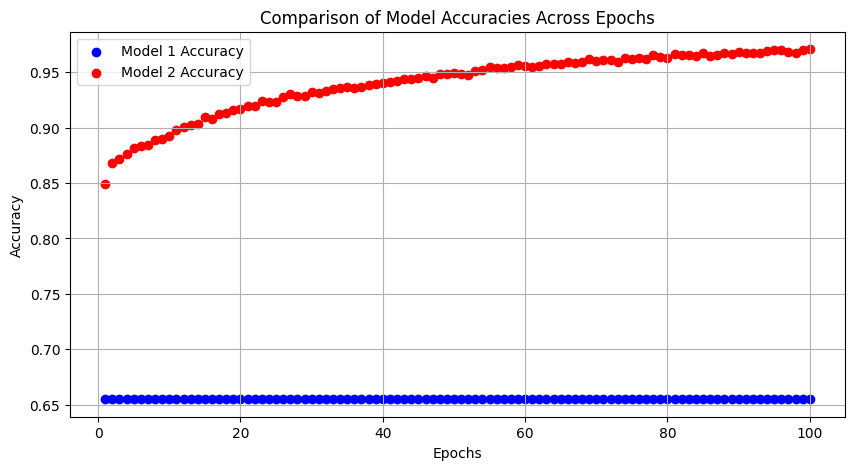

import pandas as pd
from datetime import datetime, timedelta
import numpy as np
import joblib
import re
import sys
sys.path.insert(0, '../')
import numpy as np
# Datasets
from aif360.datasets import MEPSDataset19
# Fairness metrics
from aif360.metrics import BinaryLabelDatasetMetric
# Explainers
from aif360.explainers import MetricTextExplainer
# Scalers
from sklearn.preprocessing import StandardScaler
# Bias mitigation techniques
from aif360.algorithms.preprocessing import Reweighing,DisparateImpactRemover
from aif360.algorithms.preprocessing import LFR
from aif360.algorithms.preprocessing import OptimPreprocDEFINING custom_loss FUNCTION with Standard Lambda = 0.5
from sklearn.model_selection import train_test_splitdataset_orig_panel19 = MEPSDataset19()dataset_orig_panel19_train = MEPSDataset19()dataset_orig_panel19_train.featuresarray([[53. , 1. , 25.93, ..., 0. , 1. , 0. ],
[56. , 1. , 20.42, ..., 0. , 1. , 0. ],
[23. , 1. , 53.12, ..., 0. , 1. , 0. ],
...,
[ 2. , 1. , -1. , ..., 0. , 1. , 0. ],
[54. , 0. , 43.97, ..., 0. , 1. , 0. ],
[73. , 0. , 42.68, ..., 0. , 1. , 0. ]])sens_ind = 0
sens_attr = dataset_orig_panel19_train.protected_attribute_names[sens_ind]
unprivileged_groups = [{sens_attr: v} for v in
dataset_orig_panel19_train.unprivileged_protected_attributes[sens_ind]]
privileged_groups = [{sens_attr: v} for v in
dataset_orig_panel19_train.privileged_protected_attributes[sens_ind]]sens_attr'RACE'privileged_groups[{'RACE': 1.0}]unprivileged_groups[{'RACE': 0.0}]dataset_orig_panel19_train instance weights features \
protected attribute
AGE RACE PCS42 MCS42
instance names
0 21854.981705 53.0 1.0 25.93 58.47
1 18169.604822 56.0 1.0 20.42 26.57
3 17191.832515 23.0 1.0 53.12 50.33
4 20261.485463 3.0 1.0 -1.00 -1.00
5 0.000000 27.0 0.0 -1.00 -1.00
... ... ... ... ... ...
16573 4111.315754 25.0 0.0 56.71 62.39
16574 5415.228173 25.0 0.0 56.71 62.39
16575 3896.116219 2.0 1.0 -1.00 -1.00
16576 4883.851005 54.0 0.0 43.97 42.45
16577 6630.588948 73.0 0.0 42.68 43.46
... \
...
K6SUM42 REGION=1 REGION=2 REGION=3 REGION=4 ... EMPST=4
instance names ...
0 3.0 0.0 1.0 0.0 0.0 ... 1.0
1 17.0 0.0 1.0 0.0 0.0 ... 1.0
3 7.0 0.0 1.0 0.0 0.0 ... 0.0
4 -1.0 0.0 1.0 0.0 0.0 ... 0.0
5 -1.0 0.0 0.0 1.0 0.0 ... 0.0
... ... ... ... ... ... ... ...
16573 0.0 0.0 0.0 1.0 0.0 ... 0.0
16574 0.0 0.0 0.0 1.0 0.0 ... 1.0
16575 -1.0 0.0 0.0 1.0 0.0 ... 0.0
16576 24.0 1.0 0.0 0.0 0.0 ... 0.0
16577 0.0 1.0 0.0 0.0 0.0 ... 1.0
\
POVCAT=1 POVCAT=2 POVCAT=3 POVCAT=4 POVCAT=5 INSCOV=1 INSCOV=2
instance names
0 1.0 0.0 0.0 0.0 0.0 0.0 1.0
1 0.0 0.0 1.0 0.0 0.0 0.0 1.0
3 0.0 1.0 0.0 0.0 0.0 0.0 1.0
4 0.0 1.0 0.0 0.0 0.0 0.0 1.0
5 0.0 0.0 1.0 0.0 0.0 1.0 0.0
... ... ... ... ... ... ... ...
16573 1.0 0.0 0.0 0.0 0.0 1.0 0.0
16574 1.0 0.0 0.0 0.0 0.0 1.0 0.0
16575 1.0 0.0 0.0 0.0 0.0 0.0 1.0
16576 0.0 0.0 1.0 0.0 0.0 0.0 1.0
16577 0.0 0.0 1.0 0.0 0.0 0.0 1.0
labels
INSCOV=3
instance names
0 0.0 1.0
1 0.0 1.0
3 0.0 0.0
4 0.0 0.0
5 0.0 0.0
... ... ...
16573 0.0 0.0
16574 0.0 0.0
16575 0.0 0.0
16576 0.0 0.0
16577 0.0 0.0
[15830 rows x 140 columns]metric_orig_panel19_train = BinaryLabelDatasetMetric(
dataset_orig_panel19_train,
unprivileged_groups=unprivileged_groups,
privileged_groups=privileged_groups)explainer_orig_panel19_train = MetricTextExplainer(metric_orig_panel19_train)test_name=['Mean Difference','Consistency','Statistical Parity Difference','Disparate Impact']
test_definitions=['difference between mean values of two labels','Individual fairness metric that measures how similar the labels are for similar instances.','Difference in selection rates.','ratio of positive outcomes in the unprivileged group divided by the ratio of positive outcomes in the privileged group.']
test_results=[explainer_orig_panel19_train.mean_difference(),explainer_orig_panel19_train.consistency(),explainer_orig_panel19_train.statistical_parity_difference(),explainer_orig_panel19_train.disparate_impact()]
test_status=['Bias Detected','Bias Not Detected','Bias Detected','Bias Detected']
df=pd.DataFrame({'Test Name':test_name,'Test Definitions':test_definitions,'Test Results':test_results,'Test Status':test_status})test_results['Mean difference (mean label value on unprivileged instances - mean label value on privileged instances): -0.13507447726478142',
'Consistency (Zemel, et al. 2013): [0.83665193]',
'Statistical parity difference (probability of favorable outcome for unprivileged instances - probability of favorable outcome for privileged instances): -0.13507447726478142',
'Disparate impact (probability of favorable outcome for unprivileged instances / probability of favorable outcome for privileged instances): 0.49826823461176517']RW = Reweighing(unprivileged_groups=unprivileged_groups,privileged_groups=privileged_groups)
dataset_transf_panel19_train_rw = RW.fit_transform(dataset_orig_panel19_train)# Calculate Statistical Parity Difference
statistical_parity_difference = metric_orig_panel19_train.statistical_parity_difference()
print("Statistical Parity Difference (SPD):", statistical_parity_difference)
# Calculate Disparate Impact
disparate_impact = metric_orig_panel19_train.disparate_impact()
print("Disparate Impact (DI):", disparate_impact)Statistical Parity Difference (SPD): -0.13507447726478142
Disparate Impact (DI): 0.49826823461176517X_train[1]array([37. , 0. , 48.09, 36.94, 7. , 0. , 0. , 1. , 0. ,
1. , 0. , 1. , 0. , 0. , 0. , 0. , 0. , 0. ,
0. , 0. , 0. , 1. , 0. , 0. , 0. , 0. , 1. ,
0. , 0. , 0. , 1. , 0. , 0. , 0. , 0. , 0. ,
0. , 1. , 0. , 0. , 0. , 0. , 0. , 1. , 0. ,
0. , 0. , 1. , 0. , 0. , 1. , 0. , 0. , 1. ,
0. , 0. , 1. , 0. , 0. , 1. , 0. , 0. , 1. ,
0. , 0. , 1. , 0. , 0. , 1. , 0. , 0. , 1. ,
0. , 0. , 1. , 0. , 0. , 1. , 0. , 1. , 0. ,
0. , 0. , 1. , 1. , 0. , 0. , 0. , 0. , 1. ,
1. , 0. , 0. , 1. , 0. , 0. , 0. , 0. , 1. ,
0. , 0. , 1. , 0. , 0. , 1. , 0. , 0. , 1. ,
0. , 0. , 1. , 0. , 0. , 1. , 0. , 0. , 1. ,
0. , 0. , 0. , 1. , 0. , 0. , 0. , 0. , 0. ,
1. , 0. , 0. , 0. , 0. , 0. , 1. , 0. , 0. ,
0. , 0. , 1. ])from sklearn.linear_model import LogisticRegression
from sklearn.preprocessing import StandardScaler
from sklearn.model_selection import train_test_split
# Prepare data
X = dataset_orig_panel19_train.features
y = dataset_orig_panel19_train.labels.ravel()
# Split data
X_train, X_test, y_train, y_test = train_test_split(X, y, test_size=0.2, random_state=42)
# Scale features
scaler = StandardScaler()
X_train_scaled = scaler.fit_transform(X_train)
X_test_scaled = scaler.transform(X_test)
# Train logistic regression model
model = LogisticRegression(random_state=42)
model.fit(X_train_scaled, y_train)
# Predict probabilities on the same scaled training data
train_probabilities = model.predict_proba(X_train_scaled)[:, 1]
# Calculation of discrimination index without modifying dataset structure
sens_attr_index = dataset_orig_panel19_train.feature_names.index('RACE')
def calculate_discrimination(X, probabilities, sens_attr_index, unprivileged_val, privileged_val):
# Filter by sensitive attribute for unprivileged and privileged groups
unpriv_indices = X[:, sens_attr_index] == unprivileged_val
priv_indices = X[:, sens_attr_index] == privileged_val
# Calculate mean probabilities for both groups
mean_prob_unpriv = probabilities[unpriv_indices].mean()
mean_prob_priv = probabilities[priv_indices].mean()
# Discrimination index
discrimination = mean_prob_priv - mean_prob_unpriv
return discrimination
# Define unprivileged and privileged values
unprivileged_val = 0.0
privileged_val = 1.0
# Compute discrimination
discrimination_index = calculate_discrimination(X_train, train_probabilities, sens_attr_index, unprivileged_val, privileged_val)
print("Discrimination Index: {:.4f}".format(discrimination_index))Discrimination Index: 0.1315X_train_scaledarray([[-0.76152525, -0.7401269 , -1.16660499, ..., -1.06074916,
-0.744093 , 2.78531021],
[ 0.08369436, -0.7401269 , 0.72413337, ..., -1.06074916,
-0.744093 , 2.78531021],
[-0.45012855, -0.7401269 , 0.94174738, ..., 0.94272994,
-0.744093 , -0.35902644],
...,
[ 0.79545824, 1.35111965, 0.09517111, ..., -1.06074916,
1.34391803, -0.35902644],
[-0.09424661, -0.7401269 , 1.09658071, ..., 0.94272994,
-0.744093 , -0.35902644],
[-0.62806952, -0.7401269 , 0.4680036 , ..., 0.94272994,
-0.744093 , -0.35902644]])import torch
import torch.nn as nn
import torch.optim as optim
# Define the model
class BinaryClassifier(nn.Module):
def __init__(self, input_size):
super(BinaryClassifier, self).__init__()
self.fc1 = nn.Linear(input_size, 64) # Adjust input size to exclude sensitive attribute
self.fc2 = nn.Linear(64, 1)
def forward(self, x):
x = torch.relu(self.fc1(x))
x = torch.sigmoid(self.fc2(x))
return x.squeeze()
# Custom loss function
def custom_loss(output, target, sensitive_features, lambda_val=0.1, k=6):
criterion = nn.BCELoss()
standard_loss = criterion(output, target)
mask_unpriv = (sensitive_features == 0)
mask_priv = (sensitive_features == 1)
if torch.sum(mask_unpriv) > 0 and torch.sum(mask_priv) > 0:
prob_unpriv = torch.mean(output[mask_unpriv])
prob_priv = torch.mean(output[mask_priv])
discrimination = (prob_priv - prob_unpriv) ** k
else:
discrimination = torch.tensor(0.0) # Handle cases where one group might be missing
return standard_loss + lambda_val * discrimination
# Assuming your dataset is loaded correctly
data = torch.tensor(X_train_scaled).float() # Make sure this conversion is done correctly
targets = torch.tensor(y_train).float().unsqueeze(1) # Ensure targets are correctly shaped
sensitive_features = data[:, 1] # Extract the sensitive features
features = torch.cat((data[:, :1], data[:, 2:]), dim=1) # Exclude the sensitive attribute from the main features
model = BinaryClassifier(features.shape[1])
optimizer = optim.Adam(model.parameters(), lr=0.001)
model.train()
for epoch in range(10):
optimizer.zero_grad()
outputs = model(features)
loss = custom_loss(outputs, targets.squeeze(), sensitive_features)
loss.backward()
optimizer.step()
print(f'Epoch {epoch+1}, Loss: {loss.item()}')Epoch 1, Loss: 0.6436237692832947
Epoch 2, Loss: 0.6127090454101562
Epoch 3, Loss: 0.5840549468994141
Epoch 4, Loss: 0.557695209980011
Epoch 5, Loss: 0.5335997343063354
Epoch 6, Loss: 0.5117872953414917
Epoch 7, Loss: 0.49214401841163635
Epoch 8, Loss: 0.47453635931015015
Epoch 9, Loss: 0.45879927277565
Epoch 10, Loss: 0.44474470615386963import torch
import torch.nn as nn
import torch.optim as optim
# Define the model
class BinaryClassifier(nn.Module):
def __init__(self, input_size):
super(BinaryClassifier, self).__init__()
self.fc1 = nn.Linear(input_size, 64)
self.fc2 = nn.Linear(64, 1)
def forward(self, x):
x = torch.relu(self.fc1(x))
x = torch.sigmoid(self.fc2(x))
return x.squeeze()
# Custom loss function
def custom_loss(output, target, sensitive_features, lambda_val=0.01, k=2):
criterion = nn.BCELoss()
standard_loss = criterion(output, target)
mask_unpriv = (sensitive_features == 0)
mask_priv = (sensitive_features == 1)
if torch.sum(mask_unpriv) > 0 and torch.sum(mask_priv) > 0:
prob_unpriv = torch.mean(output[mask_unpriv])
prob_priv = torch.mean(output[mask_priv])
discrimination = (prob_priv - prob_unpriv) ** k
else:
discrimination = torch.tensor(0.0) # Handle cases where one group might be missing
return standard_loss + lambda_val * discrimination
def calculate_accuracy(predictions, targets):
predicted_classes = (predictions >= 0.5).float()
return (predicted_classes == targets).float().mean()
# Data preparation
data = torch.tensor(X_train_scaled).float()
targets = torch.tensor(y_train).float().unsqueeze(1)
sensitive_features = data[:, 1]
features = torch.cat((data[:, :1], data[:, 2:]), dim=1)
# Test data (assuming it's prepared similarly)
test_data = torch.tensor(X_test_scaled).float()
test_targets = torch.tensor(y_test).float().unsqueeze(1)
test_sensitive_features = test_data[:, 1]
test_features = torch.cat((test_data[:, :1], test_data[:, 2:]), dim=1)
model = BinaryClassifier(features.shape[1])
optimizer = optim.Adam(model.parameters(), lr=0.001)
# Training loop
model.train()
for epoch in range(10):
optimizer.zero_grad()
outputs = model(features)
loss = custom_loss(outputs, targets.squeeze(), sensitive_features)
train_accuracy = calculate_accuracy(outputs, targets.squeeze())
loss.backward()
optimizer.step()
# Evaluation on test data
model.eval()
with torch.no_grad():
test_outputs = model(test_features)
test_loss = custom_loss(test_outputs, test_targets.squeeze(), test_sensitive_features)
test_accuracy = calculate_accuracy(test_outputs, test_targets.squeeze())
print(f'Epoch {epoch+1}, Train Loss: {loss.item()}, Train Acc: {train_accuracy.item()*100:.2f}%, '
f'Test Loss: {test_loss.item()}, Test Acc: {test_accuracy.item()*100:.2f}%')
model.train()Epoch 1, Train Loss: 0.7673807740211487, Train Acc: 24.21%, Test Loss: 0.7409172654151917, Test Acc: 31.46%
Epoch 2, Train Loss: 0.7404283881187439, Train Acc: 32.01%, Test Loss: 0.716571569442749, Test Acc: 41.63%
Epoch 3, Train Loss: 0.7157283425331116, Train Acc: 41.29%, Test Loss: 0.6942327618598938, Test Acc: 53.85%
Epoch 4, Train Loss: 0.693112313747406, Train Acc: 53.62%, Test Loss: 0.6738004684448242, Test Acc: 67.66%
Epoch 5, Train Loss: 0.6722973585128784, Train Acc: 68.04%, Test Loss: 0.6548610329627991, Test Acc: 74.76%
Epoch 6, Train Loss: 0.6529971957206726, Train Acc: 75.09%, Test Loss: 0.637105405330658, Test Acc: 77.51%
Epoch 7, Train Loss: 0.6348973512649536, Train Acc: 78.02%, Test Loss: 0.6203395128250122, Test Acc: 79.41%
Epoch 8, Train Loss: 0.6178111433982849, Train Acc: 79.60%, Test Loss: 0.6044129729270935, Test Acc: 80.51%
Epoch 9, Train Loss: 0.6016006469726562, Train Acc: 80.84%, Test Loss: 0.589247465133667, Test Acc: 81.30%
Epoch 10, Train Loss: 0.5861577391624451, Train Acc: 81.67%, Test Loss: 0.5747091770172119, Test Acc: 81.87%import torch
import torch.nn as nn
import torch.optim as optim
# Define the model
class BinaryClassifier(nn.Module):
def __init__(self, input_size):
super(BinaryClassifier, self).__init__()
self.fc1 = nn.Linear(input_size, 64)
self.fc2 = nn.Linear(64, 1)
def forward(self, x):
x = torch.relu(self.fc1(x))
x = torch.sigmoid(self.fc2(x))
return x.squeeze()
# Initialize binary cross-entropy loss
criterion = nn.BCELoss()
def calculate_accuracy(predictions, targets):
predicted_classes = (predictions >= 0.5).float()
return (predicted_classes == targets).float().mean()
# Data preparation
data = torch.tensor(X_train_scaled).float()
targets = torch.tensor(y_train).float().unsqueeze(1)
sensitive_features = data[:, 1]
features = torch.cat((data[:, :1], data[:, 2:]), dim=1)
# Test data (assuming it's prepared similarly)
test_data = torch.tensor(X_test_scaled).float()
test_targets = torch.tensor(y_test).float().unsqueeze(1)
test_sensitive_features = test_data[:, 1]
test_features = torch.cat((test_data[:, :1], test_data[:, 2:]), dim=1)
model = BinaryClassifier(features.shape[1])
optimizer = optim.Adam(model.parameters(), lr=0.001)
# Training loop
model.train()
for epoch in range(10):
optimizer.zero_grad()
outputs = model(features)
loss = criterion(outputs, targets.squeeze())
train_accuracy = calculate_accuracy(outputs, targets.squeeze())
loss.backward()
optimizer.step()
# Evaluation on test data
model.eval()
with torch.no_grad():
test_outputs = model(test_features)
test_loss = criterion(test_outputs, test_targets.squeeze())
test_accuracy = calculate_accuracy(test_outputs, test_targets.squeeze())
print(f'Epoch {epoch+1}, Train Loss: {loss.item()}, Train Acc: {train_accuracy.item()*100:.2f}%, '
f'Test Loss: {test_loss.item()}, Test Acc: {test_accuracy.item()*100:.2f}%')
model.train()Epoch 1, Train Loss: 0.7674269676208496, Train Acc: 34.36%, Test Loss: 0.7305501103401184, Test Acc: 39.80%
Epoch 2, Train Loss: 0.7305780053138733, Train Acc: 40.48%, Test Loss: 0.6975762248039246, Test Acc: 49.31%
Epoch 3, Train Loss: 0.6973879337310791, Train Acc: 49.25%, Test Loss: 0.668036162853241, Test Acc: 66.20%
Epoch 4, Train Loss: 0.6675889492034912, Train Acc: 66.80%, Test Loss: 0.6415244936943054, Test Acc: 75.43%
Epoch 5, Train Loss: 0.6408513188362122, Train Acc: 75.71%, Test Loss: 0.61774742603302, Test Acc: 78.68%
Epoch 6, Train Loss: 0.6167588233947754, Train Acc: 78.40%, Test Loss: 0.5962265729904175, Test Acc: 80.39%
Epoch 7, Train Loss: 0.5949429273605347, Train Acc: 80.14%, Test Loss: 0.5766510367393494, Test Acc: 81.40%
Epoch 8, Train Loss: 0.5751211643218994, Train Acc: 81.06%, Test Loss: 0.5587018132209778, Test Acc: 81.84%
Epoch 9, Train Loss: 0.5569527745246887, Train Acc: 81.71%, Test Loss: 0.5421833395957947, Test Acc: 82.25%
Epoch 10, Train Loss: 0.5401964783668518, Train Acc: 82.35%, Test Loss: 0.5268954634666443, Test Acc: 82.72%import torch
import torch.nn as nn
import torch.optim as optim
from torch.utils.data import DataLoader, TensorDataset, random_split
# Helper function to calculate accuracy
def binary_accuracy(y_pred, y_true):
# Applying threshold to get binary output
y_pred_tag = torch.round(y_pred)
correct_results_sum = (y_pred_tag == y_true).sum().float()
acc = correct_results_sum / y_true.shape[0]
acc = torch.round(acc * 100)
return acc
# Custom discrimination loss function
def discrimination_loss(outputs, targets, sensitive_features, lambda_val=0.5, k=2):
criterion = nn.BCELoss()
standard_loss = criterion(outputs, targets)
mask_unpriv = (sensitive_features == 0)
mask_priv = (sensitive_features == 1)
prob_unpriv = torch.mean(outputs[mask_unpriv])
prob_priv = torch.mean(outputs[mask_priv])
discrimination = (prob_priv - prob_unpriv) ** k
return standard_loss + lambda_val * discrimination
# Define the model
class BinaryClassifier(nn.Module):
def __init__(self, input_size):
super(BinaryClassifier, self).__init__()
self.fc1 = nn.Linear(input_size, 64)
self.fc2 = nn.Linear(64, 1)
def forward(self, x):
x = torch.relu(self.fc1(x))
x = torch.sigmoid(self.fc2(x))
return x.squeeze()
# Define a simple binary crossentropy loss model for comparison
class SimpleBinaryClassifier(nn.Module):
def __init__(self, input_size):
super(SimpleBinaryClassifier, self).__init__()
self.fc1 = nn.Linear(input_size, 64)
self.fc2 = nn.Linear(64, 1)
def forward(self, x):
x = torch.relu(self.fc1(x))
x = torch.sigmoid(self.fc2(x))
return x.squeeze()
# Prepare datasets
dataset = TensorDataset(features, targets, sensitive_features)
train_size = int(0.8 * len(dataset))
val_size = len(dataset) - train_size
train_dataset, val_dataset = random_split(dataset, [train_size, val_size])
train_loader = DataLoader(train_dataset, batch_size=32, shuffle=True)
val_loader = DataLoader(val_dataset, batch_size=32, shuffle=False)
# Initialize model and optimizer
model = BinaryClassifier(features.shape[1])
optimizer = optim.Adam(model.parameters(), lr=0.001)
# Training loop
def train_model(model, optimizer, train_loader, val_loader, custom_loss=None):
for epoch in range(10):
model.train()
train_loss = 0
train_acc = 0
for inputs, labels, sens in train_loader:
optimizer.zero_grad()
outputs = model(inputs)
if custom_loss:
loss = custom_loss(outputs, labels.squeeze(), sens.squeeze())
else:
loss = nn.BCELoss()(outputs, labels.squeeze())
loss.backward()
optimizer.step()
train_loss += loss.item()
train_acc += binary_accuracy(outputs, labels.squeeze()).item()
# Validation phase
model.eval()
val_loss = 0
val_acc = 0
with torch.no_grad():
for inputs, labels, sens in val_loader:
outputs = model(inputs)
if custom_loss:
loss = custom_loss(outputs, labels.squeeze(), sens.squeeze())
else:
loss = nn.BCELoss()(outputs, labels.squeeze())
val_loss += loss.item()
val_acc += binary_accuracy(outputs, labels.squeeze()).item()
# Average loss and accuracy
train_loss /= len(train_loader)
train_acc /= len(train_loader)
val_loss /= len(val_loader)
val_acc /= len(val_loader)
print(f'Epoch {epoch+1}, Train Loss: {train_loss:.4f}, Train Acc: {train_acc:.2f}, Val Loss: {val_loss:.4f}, Val Acc: {val_acc:.2f}')
# Train the model with discrimination loss
# Train another model with only binary crossentropy
train_model(model, optimizer, train_loader, val_loader, custom_loss=discrimination_loss)Epoch 1, Train Loss: nan, Train Acc: 85.77, Val Loss: nan, Val Acc: 85.97
Epoch 2, Train Loss: nan, Train Acc: 86.90, Val Loss: nan, Val Acc: 86.05
Epoch 3, Train Loss: nan, Train Acc: 87.13, Val Loss: nan, Val Acc: 86.30
Epoch 4, Train Loss: nan, Train Acc: 87.40, Val Loss: nan, Val Acc: 86.24
Epoch 5, Train Loss: nan, Train Acc: 87.93, Val Loss: nan, Val Acc: 86.33
Epoch 6, Train Loss: nan, Train Acc: 88.23, Val Loss: nan, Val Acc: 86.01
Epoch 7, Train Loss: nan, Train Acc: 88.21, Val Loss: nan, Val Acc: 86.25
Epoch 8, Train Loss: nan, Train Acc: 88.37, Val Loss: nan, Val Acc: 86.17
Epoch 9, Train Loss: nan, Train Acc: 88.96, Val Loss: nan, Val Acc: 85.75
Epoch 10, Train Loss: nan, Train Acc: 88.86, Val Loss: nan, Val Acc: 85.99simple_model = SimpleBinaryClassifier(features.shape[1])
simple_optimizer = optim.Adam(simple_model.parameters(), lr=0.001)
train_model(simple_model, simple_optimizer, train_loader, val_loader)Epoch 1, Train Loss: 0.3526, Train Acc: 85.74, Val Loss: 0.3346, Val Acc: 86.34
Epoch 2, Train Loss: 0.3199, Train Acc: 86.70, Val Loss: 0.3338, Val Acc: 85.76
Epoch 3, Train Loss: 0.3129, Train Acc: 87.31, Val Loss: 0.3343, Val Acc: 86.40
Epoch 4, Train Loss: 0.3095, Train Acc: 87.41, Val Loss: 0.3304, Val Acc: 86.11
Epoch 5, Train Loss: 0.3047, Train Acc: 87.72, Val Loss: 0.3305, Val Acc: 86.55
Epoch 6, Train Loss: 0.2998, Train Acc: 88.05, Val Loss: 0.3306, Val Acc: 86.38
Epoch 7, Train Loss: 0.2960, Train Acc: 88.30, Val Loss: 0.3326, Val Acc: 86.10
Epoch 8, Train Loss: 0.2913, Train Acc: 88.62, Val Loss: 0.3351, Val Acc: 85.94
Epoch 9, Train Loss: 0.2864, Train Acc: 88.95, Val Loss: 0.3380, Val Acc: 86.04
Epoch 10, Train Loss: 0.2806, Train Acc: 89.21, Val Loss: 0.3388, Val Acc: 85.90import torch
import torch.nn as nn
import torch.optim as optim
from torch.utils.data import DataLoader, TensorDataset, random_split
# Helper function to calculate accuracy
def binary_accuracy(y_pred, y_true):
# Applying threshold to get binary output
y_pred_tag = torch.round(y_pred)
correct_results_sum = (y_pred_tag == y_true).sum().float()
acc = correct_results_sum / y_true.shape[0]
acc = torch.round(acc * 100)
return acc
# Custom discrimination loss function
def discrimination_loss(outputs, targets, sensitive_features, lambda_val=0.5, k=2):
criterion = nn.BCELoss()
standard_loss = criterion(outputs, targets)
mask_unpriv = (sensitive_features == 0)
mask_priv = (sensitive_features == 1)
prob_unpriv = torch.mean(outputs[mask_unpriv])
prob_priv = torch.mean(outputs[mask_priv])
discrimination = (prob_priv - prob_unpriv) ** k
return standard_loss + lambda_val * discrimination
# Define the model
class BinaryClassifier(nn.Module):
def __init__(self, input_size):
super(BinaryClassifier, self).__init__()
self.fc1 = nn.Linear(input_size, 64)
self.fc2 = nn.Linear(64, 1)
def forward(self, x):
x = torch.relu(self.fc1(x))
x = torch.sigmoid(self.fc2(x))
return x.squeeze()
# Define a simple binary crossentropy loss model for comparison
class SimpleBinaryClassifier(nn.Module):
def __init__(self, input_size):
super(SimpleBinaryClassifier, self).__init__()
self.fc1 = nn.Linear(input_size, 64)
self.fc2 = nn.Linear(64, 1)
def forward(self, x):
x = torch.relu(self.fc1(x))
x = torch.sigmoid(self.fc2(x))
return x.squeeze()
data = torch.tensor(X_train_scaled).float()
targets = torch.tensor(y_train).float().unsqueeze(1)
sensitive_features = data[:, 1] # Extract the sensitive feature
features = torch.cat((data[:, :1], data[:, 2:]), dim=1) # Exclude the sensitive attribute
# Setup DataLoader
dataset = TensorDataset(features, targets, sensitive_features)
train_size = int(0.8 * len(dataset))
val_size = len(dataset) - train_size
train_dataset, val_dataset = random_split(dataset, [train_size, val_size])
train_loader = DataLoader(train_dataset, batch_size=32, shuffle=True)
val_loader = DataLoader(val_dataset, batch_size=32, shuffle=False)
# Initialize model and optimizer
model = BinaryClassifier(features.shape[1])
optimizer = optim.Adam(model.parameters(), lr=0.001)
# Training loop
def train_model(model, optimizer, train_loader, val_loader, custom_loss=None):
for epoch in range(10):
model.train()
train_loss = 0
train_acc = 0
for inputs, labels, sens in train_loader:
optimizer.zero_grad()
outputs = model(inputs)
if custom_loss:
loss = custom_loss(outputs, labels.squeeze(), sens.squeeze())
else:
loss = nn.BCELoss()(outputs, labels.squeeze())
loss.backward()
optimizer.step()
train_loss += loss.item()
train_acc += binary_accuracy(outputs, labels.squeeze()).item()
# Validation phase
model.eval()
val_loss = 0
val_acc = 0
with torch.no_grad():
for inputs, labels, sens in val_loader:
outputs = model(inputs)
if custom_loss:
loss = custom_loss(outputs, labels.squeeze(), sens.squeeze())
else:
loss = nn.BCELoss()(outputs, labels.squeeze())
val_loss += loss.item()
val_acc += binary_accuracy(outputs, labels.squeeze()).item()
# Average loss and accuracy
train_loss /= len(train_loader)
train_acc /= len(train_loader)
val_loss /= len(val_loader)
val_acc /= len(val_loader)
print(f'Epoch {epoch+1}, Train Loss: {train_loss:.4f}, Train Acc: {train_acc:.2f}, Val Loss: {val_loss:.4f}, Val Acc: {val_acc:.2f}')
# Train the model with discrimination loss
train_model(model, optimizer, train_loader, val_loader, custom_loss=discrimination_loss)
# Initialize and train another model with only binary crossentropy
Epoch 1, Train Loss: nan, Train Acc: 86.01, Val Loss: nan, Val Acc: 86.56
Epoch 2, Train Loss: nan, Train Acc: 86.83, Val Loss: nan, Val Acc: 86.97
Epoch 3, Train Loss: nan, Train Acc: 87.25, Val Loss: nan, Val Acc: 87.54
Epoch 4, Train Loss: nan, Train Acc: 87.22, Val Loss: nan, Val Acc: 87.04
Epoch 5, Train Loss: nan, Train Acc: 87.67, Val Loss: nan, Val Acc: 87.53
Epoch 6, Train Loss: nan, Train Acc: 87.95, Val Loss: nan, Val Acc: 87.24
Epoch 7, Train Loss: nan, Train Acc: 88.06, Val Loss: nan, Val Acc: 87.11
Epoch 8, Train Loss: nan, Train Acc: 88.62, Val Loss: nan, Val Acc: 86.70
Epoch 9, Train Loss: nan, Train Acc: 88.73, Val Loss: nan, Val Acc: 86.92
Epoch 10, Train Loss: nan, Train Acc: 89.14, Val Loss: nan, Val Acc: 86.97simple_model = SimpleBinaryClassifier(features.shape[1])
simple_optimizer = optim.Adam(simple_model.parameters(), lr=0.001)
train_model(simple_model, simple_optimizer, train_loader, val_loader) # This time without custom lossimport tensorflow as tf
from tensorflow.keras.layers import Layer, Input, Dense
from tensorflow.keras.models import Model
from tensorflow.keras.losses import BinaryCrossentropy
from tensorflow.keras.optimizers import Adam
class DiscriminationLayer(Layer):
def __init__(self, sensitive_index, k=2, **kwargs):
super().__init__(**kwargs)
self.sensitive_index = sensitive_index
self.k = k
def call(self, inputs):
y_pred, features = inputs
sensitive_attr = features[:, self.sensitive_index]
mask_unpriv = tf.cast(tf.equal(sensitive_attr, 0), dtype=tf.float32)
mask_priv = tf.cast(tf.equal(sensitive_attr, 1), dtype=tf.float32)
epsilon = 1e-8
prob_unpriv = tf.reduce_sum(y_pred * mask_unpriv) / (tf.reduce_sum(mask_unpriv) + epsilon)
prob_priv = tf.reduce_sum(y_pred * mask_priv) / (tf.reduce_sum(mask_priv) + epsilon)
discrimination = tf.pow((prob_priv - prob_unpriv), self.k)
return [y_pred, discrimination]
@tf.function
def custom_loss(y_true, y_pred_and_discrimination, lambda_val=0.5):
y_pred, discrimination = y_pred_and_discrimination
standard_loss = BinaryCrossentropy(from_logits=True)(y_true, y_pred)
return standard_loss - lambda_val * discrimination
# Model building
input_features = Input(shape=(input_size,))
sensitive_index = 3 # Update this to your sensitive attribute index
x = Dense(64, activation='relu')(input_features)
predictions = Dense(1, activation='sigmoid')(x)
disc_layer = DiscriminationLayer(sensitive_index=sensitive_index)([predictions, input_features])
model = Model(inputs=input_features, outputs=disc_layer)
# Model compilation and training
model.compile(optimizer=Adam(learning_rate=0.001), loss=lambda y_true, y_pred: custom_loss(y_true, y_pred, 0.5), metrics=['accuracy'])
history = model.fit(X_train_scaled, y_train, epochs=10, batch_size=32, validation_split=0.2)Epoch 1/10--------------------------------------------------------------------------- OperatorNotAllowedInGraphError Traceback (most recent call last) Cell In[60], line 42 40 # Model compilation and training 41 model.compile(optimizer=Adam(learning_rate=0.001), loss=lambda y_true, y_pred: custom_loss(y_true, y_pred, 0.5), metrics=['accuracy']) ---> 42 history = model.fit(X_train_scaled, y_train, epochs=10, batch_size=32, validation_split=0.2) File c:\Users\srinivas\anaconda3\Lib\site-packages\keras\src\utils\traceback_utils.py:122, in filter_traceback.<locals>.error_handler(*args, **kwargs) 119 filtered_tb = _process_traceback_frames(e.__traceback__) 120 # To get the full stack trace, call: 121 # `keras.config.disable_traceback_filtering()` --> 122 raise e.with_traceback(filtered_tb) from None 123 finally: 124 del filtered_tb File c:\Users\srinivas\anaconda3\Lib\site-packages\tensorflow\python\eager\polymorphic_function\autograph_util.py:52, in py_func_from_autograph.<locals>.autograph_handler(*args, **kwargs) 50 except Exception as e: # pylint:disable=broad-except 51 if hasattr(e, "ag_error_metadata"): ---> 52 raise e.ag_error_metadata.to_exception(e) 53 else: 54 raise OperatorNotAllowedInGraphError: in user code: File "C:\Users\srinivas\AppData\Local\Temp\ipykernel_19508\3984959856.py", line 26, in custom_loss * y_pred, discrimination = y_pred_and_discrimination OperatorNotAllowedInGraphError: Iterating over a symbolic `tf.Tensor` is not allowed. You can attempt the following resolutions to the problem: If you are running in Graph mode, use Eager execution mode or decorate this function with @tf.function. If you are using AutoGraph, you can try decorating this function with @tf.function. If that does not work, then you may be using an unsupported feature or your source code may not be visible to AutoGraph. See https://github.com/tensorflow/tensorflow/blob/master/tensorflow/python/autograph/g3doc/reference/limitations.md#access-to-source-code for more information.
DEFINING custom_loss FUNCTION with custom Lambda , here 0.01
import tensorflow as tf
from tensorflow.keras import backend as K
from tensorflow.keras.losses import BinaryCrossentropy
from tensorflow.keras.models import Model
from tensorflow.keras.layers import Input, Dense
from tensorflow.keras.optimizers import Adam
def custom_loss(sensitive_attr, lambda_val=0.5):
"""
Creates a custom loss function that incorporates discrimination penalty.
Args:
sensitive_attr (int): Index of the sensitive attribute in the input features.
lambda_val (float): Regularization strength for the discrimination penalty.
Returns:
loss (function): A loss function that takes (y_true, y_pred).
"""
def loss(y_true, y_pred):
# Standard binary crossentropy loss
standard_loss = BinaryCrossentropy(from_logits=True)(y_true, y_pred)
# Calculate discrimination index
# We assume sensitive attribute is binary and 0 is unprivileged, 1 is privileged
mask_unpriv = K.cast(K.equal(sensitive_attr, 0), 'float32')
mask_priv = K.cast(K.equal(sensitive_attr, 1), 'float32')
# Probabilities of positive class
# prob_unpriv = K.mean(y_pred * mask_unpriv) / K.mean(mask_unpriv)
# prob_priv = K.mean(y_pred * mask_priv) / K.mean(mask_priv)
epsilon = 1e-8
prob_unpriv = K.mean(y_pred * mask_unpriv) / (K.mean(mask_unpriv) + epsilon)
prob_priv = K.mean(y_pred * mask_priv) / (K.mean(mask_priv) + epsilon)
# Discrimination as the squared difference in probabilities
discrimination = K.square(prob_priv - prob_unpriv)
print(discrimination)
# Custom loss calculation
return standard_loss - lambda_val * discrimination
return loss
# Model parameters
input_size = X_train_scaled.shape[1] # Number of features
sensitive_index = dataset_orig_panel19_train.feature_names.index('RACE')
# Define the model architecture
inputs = Input(shape=(input_size,))
x = Dense(64, activation='relu')(inputs)
outputs = Dense(1, activation='sigmoid')(x)
model = Model(inputs=inputs, outputs=outputs)
# Compile the model with the custom loss function
model.compile(optimizer=Adam(learning_rate=0.001),
loss=custom_loss(sensitive_attr=X_train_scaled[:, sensitive_index], lambda_val=0.01),
metrics=['accuracy'])
# Train the model
history1 = model.fit(X_train_scaled, y_train, epochs=100, batch_size=32, validation_split=0.2)Epoch 1/100
Tensor("compile_loss/loss/Square:0", shape=(), dtype=float32)
Tensor("compile_loss/loss/Square:0", shape=(), dtype=float32)
299/317 0s 1ms/step - accuracy: 0.8033 - loss: 0.4365Tensor("compile_loss/loss/Square:0", shape=(), dtype=float32)
317/317 1s 2ms/step - accuracy: 0.8058 - loss: 0.4327 - val_accuracy: 0.8547 - val_loss: 0.3441
Epoch 2/100
317/317 0s 1ms/step - accuracy: 0.8763 - loss: 0.3119 - val_accuracy: 0.8543 - val_loss: 0.3379
Epoch 3/100
317/317 0s 1ms/step - accuracy: 0.8794 - loss: 0.2985 - val_accuracy: 0.8587 - val_loss: 0.3372
Epoch 4/100
317/317 0s 1ms/step - accuracy: 0.8796 - loss: 0.3065 - val_accuracy: 0.8579 - val_loss: 0.3346
Epoch 5/100
317/317 1s 2ms/step - accuracy: 0.8846 - loss: 0.2883 - val_accuracy: 0.8591 - val_loss: 0.3314
Epoch 6/100
317/317 0s 1ms/step - accuracy: 0.8845 - loss: 0.2882 - val_accuracy: 0.8563 - val_loss: 0.3369
Epoch 7/100
317/317 0s 1ms/step - accuracy: 0.8925 - loss: 0.2760 - val_accuracy: 0.8579 - val_loss: 0.3360
Epoch 8/100
317/317 0s 1ms/step - accuracy: 0.8917 - loss: 0.2739 - val_accuracy: 0.8579 - val_loss: 0.3495
Epoch 9/100
317/317 0s 1ms/step - accuracy: 0.8951 - loss: 0.2717 - val_accuracy: 0.8512 - val_loss: 0.3459
Epoch 10/100
317/317 0s 1ms/step - accuracy: 0.9040 - loss: 0.2572 - val_accuracy: 0.8539 - val_loss: 0.3561
Epoch 11/100
317/317 0s 1ms/step - accuracy: 0.9010 - loss: 0.2572 - val_accuracy: 0.8539 - val_loss: 0.3470
Epoch 12/100
317/317 0s 1ms/step - accuracy: 0.9050 - loss: 0.2490 - val_accuracy: 0.8512 - val_loss: 0.3560
Epoch 13/100
317/317 0s 1ms/step - accuracy: 0.9083 - loss: 0.2481 - val_accuracy: 0.8523 - val_loss: 0.3670
Epoch 14/100
317/317 0s 1ms/step - accuracy: 0.9054 - loss: 0.2492 - val_accuracy: 0.8539 - val_loss: 0.3552
Epoch 15/100
317/317 0s 1ms/step - accuracy: 0.9137 - loss: 0.2301 - val_accuracy: 0.8508 - val_loss: 0.3714
Epoch 16/100
317/317 0s 1ms/step - accuracy: 0.9157 - loss: 0.2330 - val_accuracy: 0.8523 - val_loss: 0.3805
Epoch 17/100
317/317 0s 1ms/step - accuracy: 0.9144 - loss: 0.2339 - val_accuracy: 0.8500 - val_loss: 0.3780
Epoch 18/100
317/317 0s 1ms/step - accuracy: 0.9118 - loss: 0.2302 - val_accuracy: 0.8555 - val_loss: 0.3919
Epoch 19/100
317/317 1s 2ms/step - accuracy: 0.9162 - loss: 0.2299 - val_accuracy: 0.8480 - val_loss: 0.3883
Epoch 20/100
317/317 0s 1ms/step - accuracy: 0.9226 - loss: 0.2144 - val_accuracy: 0.8460 - val_loss: 0.4096
Epoch 21/100
317/317 0s 1ms/step - accuracy: 0.9211 - loss: 0.2217 - val_accuracy: 0.8516 - val_loss: 0.4037
Epoch 22/100
317/317 0s 1ms/step - accuracy: 0.9192 - loss: 0.2170 - val_accuracy: 0.8500 - val_loss: 0.4034
Epoch 23/100
317/317 1s 2ms/step - accuracy: 0.9270 - loss: 0.2019 - val_accuracy: 0.8413 - val_loss: 0.4156
Epoch 24/100
317/317 1s 2ms/step - accuracy: 0.9334 - loss: 0.1965 - val_accuracy: 0.8488 - val_loss: 0.4213
Epoch 25/100
317/317 0s 1ms/step - accuracy: 0.9256 - loss: 0.2058 - val_accuracy: 0.8512 - val_loss: 0.4194
Epoch 26/100
317/317 0s 1ms/step - accuracy: 0.9230 - loss: 0.2079 - val_accuracy: 0.8437 - val_loss: 0.4259
Epoch 27/100
317/317 0s 1ms/step - accuracy: 0.9303 - loss: 0.2013 - val_accuracy: 0.8441 - val_loss: 0.4273
Epoch 28/100
317/317 1s 2ms/step - accuracy: 0.9316 - loss: 0.1936 - val_accuracy: 0.8381 - val_loss: 0.4543
Epoch 29/100
317/317 0s 1ms/step - accuracy: 0.9313 - loss: 0.2016 - val_accuracy: 0.8468 - val_loss: 0.4473
Epoch 30/100
317/317 1s 2ms/step - accuracy: 0.9373 - loss: 0.1827 - val_accuracy: 0.8417 - val_loss: 0.4511
Epoch 31/100
317/317 0s 1ms/step - accuracy: 0.9346 - loss: 0.1876 - val_accuracy: 0.8350 - val_loss: 0.4681
Epoch 32/100
317/317 0s 1ms/step - accuracy: 0.9367 - loss: 0.1823 - val_accuracy: 0.8441 - val_loss: 0.4578
Epoch 33/100
317/317 0s 1ms/step - accuracy: 0.9380 - loss: 0.1823 - val_accuracy: 0.8433 - val_loss: 0.4643
Epoch 34/100
317/317 0s 1ms/step - accuracy: 0.9382 - loss: 0.1730 - val_accuracy: 0.8429 - val_loss: 0.4602
Epoch 35/100
317/317 0s 1ms/step - accuracy: 0.9407 - loss: 0.1748 - val_accuracy: 0.8397 - val_loss: 0.4727
Epoch 36/100
317/317 1s 1ms/step - accuracy: 0.9402 - loss: 0.1778 - val_accuracy: 0.8373 - val_loss: 0.4841
Epoch 37/100
317/317 0s 2ms/step - accuracy: 0.9409 - loss: 0.1663 - val_accuracy: 0.8350 - val_loss: 0.4929
Epoch 38/100
317/317 0s 1ms/step - accuracy: 0.9420 - loss: 0.1681 - val_accuracy: 0.8421 - val_loss: 0.4988
Epoch 39/100
317/317 0s 1ms/step - accuracy: 0.9475 - loss: 0.1611 - val_accuracy: 0.8429 - val_loss: 0.4904
Epoch 40/100
317/317 0s 1ms/step - accuracy: 0.9457 - loss: 0.1633 - val_accuracy: 0.8425 - val_loss: 0.5039
Epoch 41/100
317/317 0s 1ms/step - accuracy: 0.9436 - loss: 0.1630 - val_accuracy: 0.8413 - val_loss: 0.5223
Epoch 42/100
317/317 1s 2ms/step - accuracy: 0.9502 - loss: 0.1493 - val_accuracy: 0.8452 - val_loss: 0.5219
Epoch 43/100
317/317 0s 1ms/step - accuracy: 0.9460 - loss: 0.1563 - val_accuracy: 0.8405 - val_loss: 0.5146
Epoch 44/100
317/317 0s 1ms/step - accuracy: 0.9419 - loss: 0.1671 - val_accuracy: 0.8373 - val_loss: 0.6083
Epoch 45/100
317/317 0s 1ms/step - accuracy: 0.9563 - loss: 0.1423 - val_accuracy: 0.8441 - val_loss: 0.5172
Epoch 46/100
317/317 0s 1ms/step - accuracy: 0.9518 - loss: 0.1563 - val_accuracy: 0.8393 - val_loss: 0.5386
Epoch 47/100
317/317 1s 2ms/step - accuracy: 0.9515 - loss: 0.1459 - val_accuracy: 0.8401 - val_loss: 0.5497
Epoch 48/100
317/317 0s 1ms/step - accuracy: 0.9506 - loss: 0.1465 - val_accuracy: 0.8267 - val_loss: 0.5693
Epoch 49/100
317/317 0s 1ms/step - accuracy: 0.9482 - loss: 0.1613 - val_accuracy: 0.8362 - val_loss: 0.5661
Epoch 50/100
317/317 0s 1ms/step - accuracy: 0.9562 - loss: 0.1408 - val_accuracy: 0.8377 - val_loss: 0.5786
Epoch 51/100
317/317 0s 1ms/step - accuracy: 0.9569 - loss: 0.1348 - val_accuracy: 0.8287 - val_loss: 0.5823
Epoch 52/100
317/317 0s 1ms/step - accuracy: 0.9506 - loss: 0.1394 - val_accuracy: 0.8389 - val_loss: 0.5750
Epoch 53/100
317/317 0s 1ms/step - accuracy: 0.9569 - loss: 0.1372 - val_accuracy: 0.8362 - val_loss: 0.5819
Epoch 54/100
317/317 0s 1ms/step - accuracy: 0.9597 - loss: 0.1356 - val_accuracy: 0.8298 - val_loss: 0.5924
Epoch 55/100
317/317 0s 1ms/step - accuracy: 0.9589 - loss: 0.1328 - val_accuracy: 0.8310 - val_loss: 0.6046
Epoch 56/100
317/317 0s 1ms/step - accuracy: 0.9569 - loss: 0.1342 - val_accuracy: 0.8200 - val_loss: 0.6179
Epoch 57/100
317/317 0s 1ms/step - accuracy: 0.9584 - loss: 0.1330 - val_accuracy: 0.8350 - val_loss: 0.6040
Epoch 58/100
317/317 0s 1ms/step - accuracy: 0.9620 - loss: 0.1266 - val_accuracy: 0.8223 - val_loss: 0.6398
Epoch 59/100
317/317 0s 1ms/step - accuracy: 0.9587 - loss: 0.1314 - val_accuracy: 0.8322 - val_loss: 0.6161
Epoch 60/100
317/317 0s 1ms/step - accuracy: 0.9629 - loss: 0.1177 - val_accuracy: 0.8366 - val_loss: 0.6166
Epoch 61/100
317/317 0s 1ms/step - accuracy: 0.9633 - loss: 0.1183 - val_accuracy: 0.8227 - val_loss: 0.6447
Epoch 62/100
317/317 0s 1ms/step - accuracy: 0.9637 - loss: 0.1208 - val_accuracy: 0.8326 - val_loss: 0.6244
Epoch 63/100
317/317 0s 1ms/step - accuracy: 0.9604 - loss: 0.1245 - val_accuracy: 0.8346 - val_loss: 0.6591
Epoch 64/100
317/317 0s 1ms/step - accuracy: 0.9629 - loss: 0.1260 - val_accuracy: 0.8366 - val_loss: 0.6509
Epoch 65/100
317/317 0s 1ms/step - accuracy: 0.9611 - loss: 0.1246 - val_accuracy: 0.8373 - val_loss: 0.6708
Epoch 66/100
317/317 0s 1ms/step - accuracy: 0.9631 - loss: 0.1189 - val_accuracy: 0.8310 - val_loss: 0.6936
Epoch 67/100
317/317 0s 1ms/step - accuracy: 0.9592 - loss: 0.1239 - val_accuracy: 0.8216 - val_loss: 0.6786
Epoch 68/100
317/317 0s 1ms/step - accuracy: 0.9643 - loss: 0.1230 - val_accuracy: 0.8326 - val_loss: 0.6815
Epoch 69/100
317/317 0s 1ms/step - accuracy: 0.9636 - loss: 0.1216 - val_accuracy: 0.8267 - val_loss: 0.6902
Epoch 70/100
317/317 0s 1ms/step - accuracy: 0.9636 - loss: 0.1147 - val_accuracy: 0.8251 - val_loss: 0.6926
Epoch 71/100
317/317 0s 1ms/step - accuracy: 0.9649 - loss: 0.1131 - val_accuracy: 0.8342 - val_loss: 0.7052
Epoch 72/100
317/317 0s 1ms/step - accuracy: 0.9671 - loss: 0.1105 - val_accuracy: 0.8251 - val_loss: 0.6964
Epoch 73/100
317/317 0s 1ms/step - accuracy: 0.9681 - loss: 0.1057 - val_accuracy: 0.8251 - val_loss: 0.7397
Epoch 74/100
317/317 0s 1ms/step - accuracy: 0.9627 - loss: 0.1106 - val_accuracy: 0.8227 - val_loss: 0.7392
Epoch 75/100
317/317 0s 1ms/step - accuracy: 0.9667 - loss: 0.1124 - val_accuracy: 0.8310 - val_loss: 0.7185
Epoch 76/100
317/317 0s 1ms/step - accuracy: 0.9668 - loss: 0.1099 - val_accuracy: 0.8306 - val_loss: 0.7144
Epoch 77/100
317/317 0s 1ms/step - accuracy: 0.9672 - loss: 0.1099 - val_accuracy: 0.8306 - val_loss: 0.7278
Epoch 78/100
317/317 0s 1ms/step - accuracy: 0.9690 - loss: 0.1136 - val_accuracy: 0.8318 - val_loss: 0.7388
Epoch 79/100
317/317 0s 1ms/step - accuracy: 0.9696 - loss: 0.1021 - val_accuracy: 0.8247 - val_loss: 0.7466
Epoch 80/100
317/317 0s 1ms/step - accuracy: 0.9666 - loss: 0.1124 - val_accuracy: 0.8196 - val_loss: 0.7523
Epoch 81/100
317/317 0s 1ms/step - accuracy: 0.9700 - loss: 0.1022 - val_accuracy: 0.8243 - val_loss: 0.7548
Epoch 82/100
317/317 0s 1ms/step - accuracy: 0.9684 - loss: 0.1008 - val_accuracy: 0.8255 - val_loss: 0.7539
Epoch 83/100
317/317 0s 1ms/step - accuracy: 0.9720 - loss: 0.0999 - val_accuracy: 0.8176 - val_loss: 0.7742
Epoch 84/100
317/317 0s 1ms/step - accuracy: 0.9713 - loss: 0.0964 - val_accuracy: 0.8192 - val_loss: 0.7893
Epoch 85/100
317/317 0s 1ms/step - accuracy: 0.9693 - loss: 0.0950 - val_accuracy: 0.8239 - val_loss: 0.8019
Epoch 86/100
317/317 0s 1ms/step - accuracy: 0.9700 - loss: 0.0959 - val_accuracy: 0.8231 - val_loss: 0.8244
Epoch 87/100
317/317 0s 1ms/step - accuracy: 0.9680 - loss: 0.1088 - val_accuracy: 0.8259 - val_loss: 0.8061
Epoch 88/100
317/317 0s 1ms/step - accuracy: 0.9694 - loss: 0.0984 - val_accuracy: 0.8231 - val_loss: 0.7985
Epoch 89/100
317/317 0s 1ms/step - accuracy: 0.9744 - loss: 0.0878 - val_accuracy: 0.8081 - val_loss: 0.8120
Epoch 90/100
317/317 0s 1ms/step - accuracy: 0.9722 - loss: 0.0955 - val_accuracy: 0.8160 - val_loss: 0.8065
Epoch 91/100
317/317 0s 1ms/step - accuracy: 0.9715 - loss: 0.0998 - val_accuracy: 0.8291 - val_loss: 0.7710
Epoch 92/100
317/317 0s 1ms/step - accuracy: 0.9731 - loss: 0.0992 - val_accuracy: 0.8235 - val_loss: 0.8246
Epoch 93/100
317/317 0s 1ms/step - accuracy: 0.9745 - loss: 0.0861 - val_accuracy: 0.8243 - val_loss: 0.8357
Epoch 94/100
317/317 0s 1ms/step - accuracy: 0.9698 - loss: 0.0975 - val_accuracy: 0.8279 - val_loss: 0.8380
Epoch 95/100
317/317 0s 1ms/step - accuracy: 0.9749 - loss: 0.0870 - val_accuracy: 0.8239 - val_loss: 0.8321
Epoch 96/100
317/317 0s 1ms/step - accuracy: 0.9729 - loss: 0.0938 - val_accuracy: 0.8184 - val_loss: 0.8346
Epoch 97/100
317/317 0s 1ms/step - accuracy: 0.9736 - loss: 0.0948 - val_accuracy: 0.8247 - val_loss: 0.8299
Epoch 98/100
317/317 0s 1ms/step - accuracy: 0.9750 - loss: 0.0909 - val_accuracy: 0.8223 - val_loss: 0.8562
Epoch 99/100
317/317 0s 1ms/step - accuracy: 0.9722 - loss: 0.0915 - val_accuracy: 0.8283 - val_loss: 0.8644
Epoch 100/100
317/317 0s 1ms/step - accuracy: 0.9696 - loss: 0.0965 - val_accuracy: 0.8231 - val_loss: 0.8665Modal with with Standard Loss(binary_crossentropy), No discrimination
# Compile the model with the custom loss function
model.compile(optimizer=Adam(learning_rate=0.001),
loss='binary_crossentropy',
metrics=['accuracy'])
# Train the model
history2 = model.fit(X_train_scaled, y_train, epochs=10, batch_size=32, validation_split=0.2)Epoch 1/10
317/317 1s 1ms/step - accuracy: 0.8989 - loss: 0.2601 - val_accuracy: 0.8551 - val_loss: 0.3496
Epoch 2/10
317/317 0s 782us/step - accuracy: 0.8954 - loss: 0.2608 - val_accuracy: 0.8531 - val_loss: 0.3531
Epoch 3/10
317/317 0s 791us/step - accuracy: 0.9064 - loss: 0.2512 - val_accuracy: 0.8531 - val_loss: 0.3671
Epoch 4/10
317/317 0s 846us/step - accuracy: 0.9090 - loss: 0.2452 - val_accuracy: 0.8468 - val_loss: 0.3754
Epoch 5/10
317/317 0s 786us/step - accuracy: 0.9121 - loss: 0.2368 - val_accuracy: 0.8484 - val_loss: 0.3660
Epoch 6/10
317/317 0s 767us/step - accuracy: 0.9150 - loss: 0.2350 - val_accuracy: 0.8535 - val_loss: 0.3656
Epoch 7/10
317/317 0s 880us/step - accuracy: 0.9145 - loss: 0.2336 - val_accuracy: 0.8468 - val_loss: 0.3764
Epoch 8/10
317/317 0s 729us/step - accuracy: 0.9177 - loss: 0.2211 - val_accuracy: 0.8500 - val_loss: 0.3734
Epoch 9/10
317/317 0s 747us/step - accuracy: 0.9162 - loss: 0.2237 - val_accuracy: 0.8543 - val_loss: 0.3917
Epoch 10/10
317/317 0s 799us/step - accuracy: 0.9165 - loss: 0.2274 - val_accuracy: 0.8496 - val_loss: 0.3897import plotly.graph_objects as go
def plot_accuracy(histories):
# Create figure for accuracy
fig = go.Figure()
# Add accuracy traces with specified colors
color_map = {'Custom Loss': ('blue', 'red'), 'Standard Loss': ('skyblue', 'pink')}
for name, history in histories:
train_color, val_color = color_map[name]
fig.add_trace(go.Scatter(x=list(range(len(history.history['accuracy']))),
y=history.history['accuracy'],
name=f'Training Accuracy - {name}',
mode='lines+markers',
line=dict(color=train_color)))
fig.add_trace(go.Scatter(x=list(range(len(history.history['val_accuracy']))),
y=history.history['val_accuracy'],
name=f'Validation Accuracy - {name}',
mode='lines+markers',
line=dict(color=val_color)))
# Update layout for accuracy graph
fig.update_layout(title='Training and Validation Accuracy',
xaxis_title='Epochs',
yaxis_title='Accuracy',
legend_title='Metric Type')
fig.show()
def plot_loss(histories):
# Create figure for loss
fig = go.Figure()
# Add loss traces with specified colors
color_map = {'Custom Loss': ('blue', 'red'), 'Standard Loss': ('skyblue', 'pink')}
for name, history in histories:
train_color, val_color = color_map[name]
fig.add_trace(go.Scatter(x=list(range(len(history.history['loss']))),
y=history.history['loss'],
name=f'Training Loss - {name}',
mode='lines+markers',
line=dict(color=train_color)))
fig.add_trace(go.Scatter(x=list(range(len(history.history['val_loss']))),
y=history.history['val_loss'],
name=f'Validation Loss - {name}',
mode='lines+markers',
line=dict(color=val_color)))
# Update layout for loss graph
fig.update_layout(title='Training and Validation Loss',
xaxis_title='Epochs',
yaxis_title='Loss',
legend_title='Metric Type')
fig.show()
# Assuming you have history1 and history2 as the history objects from your model training
plot_accuracy([('Custom Loss', history1), ('Standard Loss', history2)])
plot_loss([('Custom Loss', history1), ('Standard Loss', history2)])Unable to display output for mime type(s): application/vnd.plotly.v1+jsonUnable to display output for mime type(s): application/vnd.plotly.v1+jsonDEFINING custom_loss FUNCTION with Standard Lambda = 0.5, but Discrimination!=0
def custom_loss(lambda_val=0.5):
def loss(y_true, y_pred):
# Extract predictions and sensitive attributes
predictions = y_pred[:, 0]
sensitive_attr = y_pred[:, 1]
# Standard binary crossentropy loss
standard_loss = BinaryCrossentropy(from_logits=True)(y_true, predictions)
# Calculate discrimination based on sensitive attribute
threshold = 0
mask_unpriv = K.cast(sensitive_attr <= threshold, 'float32')
mask_priv = K.cast(sensitive_attr > threshold, 'float32')
sum_unpriv = K.sum(mask_unpriv)
sum_priv = K.sum(mask_priv)
epsilon = 1e-8
prob_unpriv = K.sum(predictions * mask_unpriv) / (sum_unpriv + epsilon)
prob_priv = K.sum(predictions * mask_priv) / (sum_priv + epsilon)
discrimination = K.square(prob_priv - prob_unpriv)
# Debug outputs
# tf.print("Standard Loss:", standard_loss, "Discrimination:", discrimination)
# Total loss with discrimination penalty
return standard_loss + lambda_val * discrimination
return loss
# Model compilation
model.compile(optimizer=Adam(learning_rate=0.001),
loss=custom_loss(lambda_val=0.01), # Change lambda_val as needed
metrics=['accuracy'])
# Training the model
history1 = model.fit(X_train_with_sensitive, y_train, epochs=100, batch_size=32, validation_split=0.2)--------------------------------------------------------------------------- NameError Traceback (most recent call last) Cell In[22], line 38 33 model.compile(optimizer=Adam(learning_rate=0.001), 34 loss=custom_loss(lambda_val=0.01), # Change lambda_val as needed 35 metrics=['accuracy']) 37 # Training the model ---> 38 history1 = model.fit(X_train_with_sensitive, y_train, epochs=100, batch_size=32, validation_split=0.2) NameError: name 'X_train_with_sensitive' is not defined
DEFINING custom_loss FUNCTION with cust Lambda = 0.01, but Discrimination!=0
import tensorflow as tf
from tensorflow.keras import backend as K
from tensorflow.keras.losses import BinaryCrossentropy
from tensorflow.keras.models import Model
from tensorflow.keras.layers import Input, Dense
from tensorflow.keras.optimizers import Adam
def custom_loss(lambda_val=0.001):
def loss(y_true, y_pred):
# Extract predictions and sensitive attributes from y_pred
predictions = y_pred[:, 0]
sensitive_attr = y_pred[:, 1]
# Debug prints to check outputs
# tf.print("Predictions sample:", predictions[:10])
# tf.print("Sensitive Attr sample:", sensitive_attr[:10])
# Standard binary crossentropy loss
standard_loss = BinaryCrossentropy(from_logits=True)(y_true, predictions)
# Determine thresholds to convert sensitive attributes to binary
# Assuming the negative and positive classes are split around zero
threshold = 0
mask_unpriv = K.cast(sensitive_attr <= threshold, 'float32')
mask_priv = K.cast(sensitive_attr > threshold, 'float32')
epsilon = 1e-8
sum_unpriv = K.sum(mask_unpriv)
sum_priv = K.sum(mask_priv)
# # Debug prints for mask sums
# tf.print("Sum unprivileged:", sum_unpriv)
# tf.print("Sum privileged:", sum_priv)
prob_unpriv = K.sum(predictions * mask_unpriv) / (sum_unpriv + epsilon)
prob_priv = K.sum(predictions * mask_priv) / (sum_priv + epsilon)
# Discrimination as the squared difference in probabilities
discrimination = K.square(prob_priv - prob_unpriv)
# # Debug print
# tf.print("Discrimination:", discrimination)
# Total loss with discrimination penalty
return standard_loss + lambda_val * discrimination
return loss
# Model parameters
input_size = X_train_scaled.shape[1] # Number of features
sensitive_index = dataset_orig_panel19_train.feature_names.index('RACE')
# Input layers
inputs = Input(shape=(input_size,))
sensitive_inputs = Input(shape=(1,))
# Network architecture
x = Dense(64, activation='relu')(inputs)
outputs = Dense(1, activation='sigmoid')(x)
combined_outputs = tf.keras.layers.concatenate([outputs, sensitive_inputs])
model = Model(inputs=[inputs, sensitive_inputs], outputs=combined_outputs)
# Compile the model with the custom loss function
model.compile(optimizer=Adam(learning_rate=0.001),
loss=custom_loss(lambda_val = 0.01),
metrics=['accuracy'])
# Prepare data with sensitive attribute
X_train_with_sensitive = [X_train_scaled, X_train_scaled[:, sensitive_index]]
# Train the model
history1_nd = model.fit(X_train_with_sensitive, y_train, epochs=100, batch_size=32, validation_split=0.2)Epoch 1/100
317/317 1s 600us/step - accuracy: 0.6550 - loss: 0.7064 - val_accuracy: 0.6609 - val_loss: 0.6894
Epoch 2/100
317/317 0s 374us/step - accuracy: 0.6535 - loss: 0.6854 - val_accuracy: 0.6609 - val_loss: 0.6880
Epoch 3/100
317/317 0s 371us/step - accuracy: 0.6558 - loss: 0.6812 - val_accuracy: 0.6609 - val_loss: 0.6878
Epoch 4/100
317/317 0s 402us/step - accuracy: 0.6569 - loss: 0.6801 - val_accuracy: 0.6609 - val_loss: 0.6883
Epoch 5/100
317/317 0s 409us/step - accuracy: 0.6568 - loss: 0.6789 - val_accuracy: 0.6609 - val_loss: 0.6881
Epoch 6/100
317/317 0s 391us/step - accuracy: 0.6590 - loss: 0.6781 - val_accuracy: 0.6609 - val_loss: 0.6878
Epoch 7/100
317/317 0s 748us/step - accuracy: 0.6499 - loss: 0.6781 - val_accuracy: 0.6609 - val_loss: 0.6891
Epoch 8/100
317/317 0s 413us/step - accuracy: 0.6574 - loss: 0.6754 - val_accuracy: 0.6609 - val_loss: 0.6888
Epoch 9/100
317/317 0s 393us/step - accuracy: 0.6514 - loss: 0.6772 - val_accuracy: 0.6609 - val_loss: 0.6886
Epoch 10/100
317/317 0s 392us/step - accuracy: 0.6547 - loss: 0.6752 - val_accuracy: 0.6609 - val_loss: 0.6893
Epoch 11/100
317/317 0s 388us/step - accuracy: 0.6602 - loss: 0.6736 - val_accuracy: 0.6609 - val_loss: 0.6887
Epoch 12/100
317/317 0s 392us/step - accuracy: 0.6497 - loss: 0.6741 - val_accuracy: 0.6609 - val_loss: 0.6896
Epoch 13/100
317/317 0s 392us/step - accuracy: 0.6501 - loss: 0.6703 - val_accuracy: 0.6609 - val_loss: 0.6900
Epoch 14/100
317/317 0s 389us/step - accuracy: 0.6578 - loss: 0.6716 - val_accuracy: 0.6609 - val_loss: 0.6891
Epoch 15/100
317/317 0s 382us/step - accuracy: 0.6528 - loss: 0.6702 - val_accuracy: 0.6609 - val_loss: 0.6884
Epoch 16/100
317/317 0s 397us/step - accuracy: 0.6607 - loss: 0.6709 - val_accuracy: 0.6609 - val_loss: 0.6890
Epoch 17/100
317/317 0s 377us/step - accuracy: 0.6566 - loss: 0.6708 - val_accuracy: 0.6609 - val_loss: 0.6896
Epoch 18/100
317/317 0s 368us/step - accuracy: 0.6558 - loss: 0.6706 - val_accuracy: 0.6609 - val_loss: 0.6901
Epoch 19/100
317/317 0s 368us/step - accuracy: 0.6534 - loss: 0.6695 - val_accuracy: 0.6609 - val_loss: 0.6898
Epoch 20/100
317/317 0s 443us/step - accuracy: 0.6589 - loss: 0.6673 - val_accuracy: 0.6609 - val_loss: 0.6903
Epoch 21/100
317/317 0s 374us/step - accuracy: 0.6594 - loss: 0.6697 - val_accuracy: 0.6609 - val_loss: 0.6895
Epoch 22/100
317/317 0s 371us/step - accuracy: 0.6541 - loss: 0.6656 - val_accuracy: 0.6609 - val_loss: 0.6897
Epoch 23/100
317/317 0s 381us/step - accuracy: 0.6504 - loss: 0.6680 - val_accuracy: 0.6609 - val_loss: 0.6898
Epoch 24/100
317/317 0s 371us/step - accuracy: 0.6491 - loss: 0.6642 - val_accuracy: 0.6609 - val_loss: 0.6893
Epoch 25/100
317/317 0s 489us/step - accuracy: 0.6595 - loss: 0.6663 - val_accuracy: 0.6609 - val_loss: 0.6908
Epoch 26/100
317/317 0s 370us/step - accuracy: 0.6486 - loss: 0.6640 - val_accuracy: 0.6609 - val_loss: 0.6899
Epoch 27/100
317/317 0s 383us/step - accuracy: 0.6512 - loss: 0.6640 - val_accuracy: 0.6609 - val_loss: 0.6891
Epoch 28/100
317/317 0s 434us/step - accuracy: 0.6623 - loss: 0.6659 - val_accuracy: 0.6609 - val_loss: 0.6902
Epoch 29/100
317/317 0s 374us/step - accuracy: 0.6488 - loss: 0.6650 - val_accuracy: 0.6609 - val_loss: 0.6908
Epoch 30/100
317/317 0s 380us/step - accuracy: 0.6629 - loss: 0.6647 - val_accuracy: 0.6609 - val_loss: 0.6891
Epoch 31/100
317/317 0s 371us/step - accuracy: 0.6499 - loss: 0.6653 - val_accuracy: 0.6609 - val_loss: 0.6902
Epoch 32/100
317/317 0s 379us/step - accuracy: 0.6537 - loss: 0.6655 - val_accuracy: 0.6609 - val_loss: 0.6903
Epoch 33/100
317/317 0s 381us/step - accuracy: 0.6560 - loss: 0.6649 - val_accuracy: 0.6609 - val_loss: 0.6893
Epoch 34/100
317/317 0s 367us/step - accuracy: 0.6515 - loss: 0.6655 - val_accuracy: 0.6609 - val_loss: 0.6899
Epoch 35/100
317/317 0s 377us/step - accuracy: 0.6549 - loss: 0.6640 - val_accuracy: 0.6609 - val_loss: 0.6904
Epoch 36/100
317/317 0s 418us/step - accuracy: 0.6498 - loss: 0.6655 - val_accuracy: 0.6609 - val_loss: 0.6903
Epoch 37/100
317/317 0s 378us/step - accuracy: 0.6572 - loss: 0.6641 - val_accuracy: 0.6609 - val_loss: 0.6926
Epoch 38/100
317/317 0s 376us/step - accuracy: 0.6623 - loss: 0.6660 - val_accuracy: 0.6609 - val_loss: 0.6901
Epoch 39/100
317/317 0s 381us/step - accuracy: 0.6571 - loss: 0.6645 - val_accuracy: 0.6609 - val_loss: 0.6906
Epoch 40/100
317/317 0s 397us/step - accuracy: 0.6571 - loss: 0.6637 - val_accuracy: 0.6609 - val_loss: 0.6909
Epoch 41/100
317/317 0s 380us/step - accuracy: 0.6551 - loss: 0.6618 - val_accuracy: 0.6609 - val_loss: 0.6906
Epoch 42/100
317/317 0s 514us/step - accuracy: 0.6476 - loss: 0.6631 - val_accuracy: 0.6609 - val_loss: 0.6917
Epoch 43/100
317/317 0s 380us/step - accuracy: 0.6529 - loss: 0.6662 - val_accuracy: 0.6609 - val_loss: 0.6911
Epoch 44/100
317/317 0s 368us/step - accuracy: 0.6571 - loss: 0.6650 - val_accuracy: 0.6609 - val_loss: 0.6911
Epoch 45/100
317/317 0s 372us/step - accuracy: 0.6486 - loss: 0.6620 - val_accuracy: 0.6609 - val_loss: 0.6914
Epoch 46/100
317/317 0s 434us/step - accuracy: 0.6591 - loss: 0.6633 - val_accuracy: 0.6609 - val_loss: 0.6913
Epoch 47/100
317/317 0s 381us/step - accuracy: 0.6451 - loss: 0.6622 - val_accuracy: 0.6609 - val_loss: 0.6913
Epoch 48/100
317/317 0s 376us/step - accuracy: 0.6502 - loss: 0.6614 - val_accuracy: 0.6609 - val_loss: 0.6907
Epoch 49/100
317/317 0s 375us/step - accuracy: 0.6517 - loss: 0.6620 - val_accuracy: 0.6609 - val_loss: 0.6918
Epoch 50/100
317/317 0s 375us/step - accuracy: 0.6593 - loss: 0.6606 - val_accuracy: 0.6609 - val_loss: 0.6911
Epoch 51/100
317/317 0s 368us/step - accuracy: 0.6534 - loss: 0.6638 - val_accuracy: 0.6609 - val_loss: 0.6910
Epoch 52/100
317/317 0s 380us/step - accuracy: 0.6602 - loss: 0.6608 - val_accuracy: 0.6609 - val_loss: 0.6910
Epoch 53/100
317/317 0s 364us/step - accuracy: 0.6466 - loss: 0.6599 - val_accuracy: 0.6609 - val_loss: 0.6917
Epoch 54/100
317/317 0s 368us/step - accuracy: 0.6599 - loss: 0.6630 - val_accuracy: 0.6609 - val_loss: 0.6906
Epoch 55/100
317/317 0s 373us/step - accuracy: 0.6499 - loss: 0.6612 - val_accuracy: 0.6609 - val_loss: 0.6906
Epoch 56/100
317/317 0s 376us/step - accuracy: 0.6580 - loss: 0.6635 - val_accuracy: 0.6609 - val_loss: 0.6913
Epoch 57/100
317/317 0s 377us/step - accuracy: 0.6571 - loss: 0.6619 - val_accuracy: 0.6609 - val_loss: 0.6900
Epoch 58/100
317/317 0s 366us/step - accuracy: 0.6615 - loss: 0.6629 - val_accuracy: 0.6609 - val_loss: 0.6904
Epoch 59/100
317/317 0s 622us/step - accuracy: 0.6572 - loss: 0.6629 - val_accuracy: 0.6609 - val_loss: 0.6899
Epoch 60/100
317/317 0s 370us/step - accuracy: 0.6577 - loss: 0.6608 - val_accuracy: 0.6609 - val_loss: 0.6912
Epoch 61/100
317/317 0s 374us/step - accuracy: 0.6541 - loss: 0.6611 - val_accuracy: 0.6609 - val_loss: 0.6907
Epoch 62/100
317/317 0s 376us/step - accuracy: 0.6614 - loss: 0.6617 - val_accuracy: 0.6609 - val_loss: 0.6903
Epoch 63/100
317/317 0s 376us/step - accuracy: 0.6569 - loss: 0.6602 - val_accuracy: 0.6609 - val_loss: 0.6903
Epoch 64/100
317/317 0s 365us/step - accuracy: 0.6489 - loss: 0.6614 - val_accuracy: 0.6609 - val_loss: 0.6905
Epoch 65/100
317/317 0s 379us/step - accuracy: 0.6461 - loss: 0.6604 - val_accuracy: 0.6609 - val_loss: 0.6912
Epoch 66/100
317/317 0s 379us/step - accuracy: 0.6633 - loss: 0.6618 - val_accuracy: 0.6609 - val_loss: 0.6904
Epoch 67/100
317/317 0s 366us/step - accuracy: 0.6551 - loss: 0.6615 - val_accuracy: 0.6609 - val_loss: 0.6900
Epoch 68/100
317/317 0s 377us/step - accuracy: 0.6567 - loss: 0.6610 - val_accuracy: 0.6609 - val_loss: 0.6902
Epoch 69/100
317/317 0s 376us/step - accuracy: 0.6503 - loss: 0.6620 - val_accuracy: 0.6609 - val_loss: 0.6915
Epoch 70/100
317/317 0s 378us/step - accuracy: 0.6579 - loss: 0.6627 - val_accuracy: 0.6609 - val_loss: 0.6905
Epoch 71/100
317/317 0s 365us/step - accuracy: 0.6569 - loss: 0.6611 - val_accuracy: 0.6609 - val_loss: 0.6915
Epoch 72/100
317/317 0s 370us/step - accuracy: 0.6494 - loss: 0.6624 - val_accuracy: 0.6609 - val_loss: 0.6918
Epoch 73/100
317/317 0s 378us/step - accuracy: 0.6484 - loss: 0.6624 - val_accuracy: 0.6609 - val_loss: 0.6916
Epoch 74/100
317/317 0s 416us/step - accuracy: 0.6512 - loss: 0.6617 - val_accuracy: 0.6609 - val_loss: 0.6909
Epoch 75/100
317/317 0s 551us/step - accuracy: 0.6613 - loss: 0.6588 - val_accuracy: 0.6609 - val_loss: 0.6914
Epoch 76/100
317/317 0s 367us/step - accuracy: 0.6557 - loss: 0.6599 - val_accuracy: 0.6609 - val_loss: 0.6907
Epoch 77/100
317/317 0s 369us/step - accuracy: 0.6592 - loss: 0.6619 - val_accuracy: 0.6609 - val_loss: 0.6900
Epoch 78/100
317/317 0s 376us/step - accuracy: 0.6553 - loss: 0.6620 - val_accuracy: 0.6609 - val_loss: 0.6917
Epoch 79/100
317/317 0s 375us/step - accuracy: 0.6564 - loss: 0.6614 - val_accuracy: 0.6609 - val_loss: 0.6912
Epoch 80/100
317/317 0s 376us/step - accuracy: 0.6525 - loss: 0.6611 - val_accuracy: 0.6609 - val_loss: 0.6907
Epoch 81/100
317/317 0s 372us/step - accuracy: 0.6482 - loss: 0.6611 - val_accuracy: 0.6609 - val_loss: 0.6912
Epoch 82/100
317/317 0s 377us/step - accuracy: 0.6534 - loss: 0.6625 - val_accuracy: 0.6609 - val_loss: 0.6900
Epoch 83/100
317/317 0s 370us/step - accuracy: 0.6580 - loss: 0.6614 - val_accuracy: 0.6609 - val_loss: 0.6907
Epoch 84/100
317/317 0s 370us/step - accuracy: 0.6500 - loss: 0.6596 - val_accuracy: 0.6609 - val_loss: 0.6907
Epoch 85/100
317/317 0s 367us/step - accuracy: 0.6518 - loss: 0.6607 - val_accuracy: 0.6609 - val_loss: 0.6899
Epoch 86/100
317/317 0s 376us/step - accuracy: 0.6579 - loss: 0.6587 - val_accuracy: 0.6609 - val_loss: 0.6908
Epoch 87/100
317/317 0s 369us/step - accuracy: 0.6646 - loss: 0.6615 - val_accuracy: 0.6609 - val_loss: 0.6897
Epoch 88/100
317/317 0s 418us/step - accuracy: 0.6484 - loss: 0.6625 - val_accuracy: 0.6609 - val_loss: 0.6904
Epoch 89/100
317/317 0s 366us/step - accuracy: 0.6500 - loss: 0.6595 - val_accuracy: 0.6609 - val_loss: 0.6917
Epoch 90/100
317/317 0s 532us/step - accuracy: 0.6472 - loss: 0.6614 - val_accuracy: 0.6609 - val_loss: 0.6915
Epoch 91/100
317/317 0s 375us/step - accuracy: 0.6485 - loss: 0.6624 - val_accuracy: 0.6609 - val_loss: 0.6917
Epoch 92/100
317/317 0s 381us/step - accuracy: 0.6596 - loss: 0.6621 - val_accuracy: 0.6609 - val_loss: 0.6902
Epoch 93/100
317/317 0s 371us/step - accuracy: 0.6508 - loss: 0.6600 - val_accuracy: 0.6609 - val_loss: 0.6894
Epoch 94/100
317/317 0s 383us/step - accuracy: 0.6520 - loss: 0.6607 - val_accuracy: 0.6609 - val_loss: 0.6909
Epoch 95/100
317/317 0s 382us/step - accuracy: 0.6587 - loss: 0.6611 - val_accuracy: 0.6609 - val_loss: 0.6928
Epoch 96/100
317/317 0s 385us/step - accuracy: 0.6538 - loss: 0.6607 - val_accuracy: 0.6609 - val_loss: 0.6923
Epoch 97/100
317/317 0s 394us/step - accuracy: 0.6521 - loss: 0.6617 - val_accuracy: 0.6609 - val_loss: 0.6910
Epoch 98/100
317/317 0s 530us/step - accuracy: 0.6471 - loss: 0.6617 - val_accuracy: 0.6609 - val_loss: 0.6923
Epoch 99/100
317/317 0s 373us/step - accuracy: 0.6484 - loss: 0.6611 - val_accuracy: 0.6609 - val_loss: 0.6891
Epoch 100/100
317/317 0s 381us/step - accuracy: 0.6508 - loss: 0.6590 - val_accuracy: 0.6609 - val_loss: 0.6903Modal with with Standard Loss(binary_crossentropy), No discrimination , but Discrimination!=0 in custom losses
# Model parameters
input_size = X_train_scaled.shape[1] # Number of features
sensitive_index = dataset_orig_panel19_train.feature_names.index('RACE')
# Input layers
inputs = Input(shape=(input_size,))
sensitive_inputs = Input(shape=(1,))
# Network architecture
x = Dense(64, activation='relu')(inputs)
outputs = Dense(1, activation='sigmoid')(x)
# No need to concatenate outputs and sensitive inputs for the loss calculation
# Separate outputs for predictions and sensitive attributes
# Since we're using binary_crossentropy, we only need the main outputs
model = Model(inputs=[inputs, sensitive_inputs], outputs=outputs)
# Compile the model with binary crossentropy
model.compile(optimizer=Adam(learning_rate=0.001),
loss='binary_crossentropy',
metrics=['accuracy'])
# Prepare data with sensitive attribute
X_train_with_sensitive = [X_train_scaled, X_train_scaled[:, sensitive_index]]
# Train the model
history2_nd = model.fit(X_train_with_sensitive, y_train, epochs=100, batch_size=32, validation_split=0.2)Epoch 1/100
317/317 1s 598us/step - accuracy: 0.8259 - loss: 0.4073 - val_accuracy: 0.8595 - val_loss: 0.3396
Epoch 2/100
317/317 0s 442us/step - accuracy: 0.8696 - loss: 0.3200 - val_accuracy: 0.8634 - val_loss: 0.3325
Epoch 3/100
317/317 0s 754us/step - accuracy: 0.8746 - loss: 0.3044 - val_accuracy: 0.8630 - val_loss: 0.3334
Epoch 4/100
317/317 0s 399us/step - accuracy: 0.8820 - loss: 0.2964 - val_accuracy: 0.8630 - val_loss: 0.3361
Epoch 5/100
317/317 0s 387us/step - accuracy: 0.8827 - loss: 0.2969 - val_accuracy: 0.8650 - val_loss: 0.3331
Epoch 6/100
317/317 0s 385us/step - accuracy: 0.8857 - loss: 0.2855 - val_accuracy: 0.8646 - val_loss: 0.3304
Epoch 7/100
317/317 0s 374us/step - accuracy: 0.8811 - loss: 0.2898 - val_accuracy: 0.8595 - val_loss: 0.3401
Epoch 8/100
317/317 0s 366us/step - accuracy: 0.8928 - loss: 0.2674 - val_accuracy: 0.8658 - val_loss: 0.3319
Epoch 9/100
317/317 0s 386us/step - accuracy: 0.8897 - loss: 0.2836 - val_accuracy: 0.8646 - val_loss: 0.3381
Epoch 10/100
317/317 0s 375us/step - accuracy: 0.8926 - loss: 0.2663 - val_accuracy: 0.8567 - val_loss: 0.3486
Epoch 11/100
317/317 0s 412us/step - accuracy: 0.8995 - loss: 0.2607 - val_accuracy: 0.8595 - val_loss: 0.3509
Epoch 12/100
317/317 0s 399us/step - accuracy: 0.9013 - loss: 0.2601 - val_accuracy: 0.8598 - val_loss: 0.3511
Epoch 13/100
317/317 0s 364us/step - accuracy: 0.9017 - loss: 0.2531 - val_accuracy: 0.8595 - val_loss: 0.3629
Epoch 14/100
317/317 0s 366us/step - accuracy: 0.9109 - loss: 0.2382 - val_accuracy: 0.8606 - val_loss: 0.3490
Epoch 15/100
317/317 0s 364us/step - accuracy: 0.9070 - loss: 0.2503 - val_accuracy: 0.8535 - val_loss: 0.3574
Epoch 16/100
317/317 0s 444us/step - accuracy: 0.9119 - loss: 0.2331 - val_accuracy: 0.8551 - val_loss: 0.3676
Epoch 17/100
317/317 0s 356us/step - accuracy: 0.9143 - loss: 0.2275 - val_accuracy: 0.8535 - val_loss: 0.3737
Epoch 18/100
317/317 0s 376us/step - accuracy: 0.9121 - loss: 0.2327 - val_accuracy: 0.8575 - val_loss: 0.3660
Epoch 19/100
317/317 0s 563us/step - accuracy: 0.9233 - loss: 0.2215 - val_accuracy: 0.8539 - val_loss: 0.3894
Epoch 20/100
317/317 0s 378us/step - accuracy: 0.9159 - loss: 0.2244 - val_accuracy: 0.8523 - val_loss: 0.3763
Epoch 21/100
317/317 0s 376us/step - accuracy: 0.9230 - loss: 0.2136 - val_accuracy: 0.8555 - val_loss: 0.3882
Epoch 22/100
317/317 0s 385us/step - accuracy: 0.9242 - loss: 0.2074 - val_accuracy: 0.8535 - val_loss: 0.3934
Epoch 23/100
317/317 0s 376us/step - accuracy: 0.9253 - loss: 0.2120 - val_accuracy: 0.8496 - val_loss: 0.3942
Epoch 24/100
317/317 0s 354us/step - accuracy: 0.9266 - loss: 0.2041 - val_accuracy: 0.8464 - val_loss: 0.4131
Epoch 25/100
317/317 0s 383us/step - accuracy: 0.9202 - loss: 0.2132 - val_accuracy: 0.8500 - val_loss: 0.4122
Epoch 26/100
317/317 0s 378us/step - accuracy: 0.9325 - loss: 0.1921 - val_accuracy: 0.8535 - val_loss: 0.4094
Epoch 27/100
317/317 0s 376us/step - accuracy: 0.9351 - loss: 0.1893 - val_accuracy: 0.8504 - val_loss: 0.4226
Epoch 28/100
317/317 0s 351us/step - accuracy: 0.9320 - loss: 0.1931 - val_accuracy: 0.8480 - val_loss: 0.4264
Epoch 29/100
317/317 0s 358us/step - accuracy: 0.9325 - loss: 0.1899 - val_accuracy: 0.8496 - val_loss: 0.4329
Epoch 30/100
317/317 0s 352us/step - accuracy: 0.9317 - loss: 0.1922 - val_accuracy: 0.8500 - val_loss: 0.4303
Epoch 31/100
317/317 0s 352us/step - accuracy: 0.9371 - loss: 0.1796 - val_accuracy: 0.8437 - val_loss: 0.4379
Epoch 32/100
317/317 0s 347us/step - accuracy: 0.9337 - loss: 0.1851 - val_accuracy: 0.8460 - val_loss: 0.4467
Epoch 33/100
317/317 0s 362us/step - accuracy: 0.9348 - loss: 0.1881 - val_accuracy: 0.8445 - val_loss: 0.4406
Epoch 34/100
317/317 0s 383us/step - accuracy: 0.9399 - loss: 0.1758 - val_accuracy: 0.8441 - val_loss: 0.4533
Epoch 35/100
317/317 0s 343us/step - accuracy: 0.9370 - loss: 0.1763 - val_accuracy: 0.8429 - val_loss: 0.4685
Epoch 36/100
317/317 0s 374us/step - accuracy: 0.9420 - loss: 0.1644 - val_accuracy: 0.8437 - val_loss: 0.4601
Epoch 37/100
317/317 0s 373us/step - accuracy: 0.9382 - loss: 0.1685 - val_accuracy: 0.8421 - val_loss: 0.4721
Epoch 38/100
317/317 0s 373us/step - accuracy: 0.9397 - loss: 0.1732 - val_accuracy: 0.8401 - val_loss: 0.4915
Epoch 39/100
317/317 0s 529us/step - accuracy: 0.9463 - loss: 0.1582 - val_accuracy: 0.8354 - val_loss: 0.5038
Epoch 40/100
317/317 0s 361us/step - accuracy: 0.9438 - loss: 0.1608 - val_accuracy: 0.8429 - val_loss: 0.4831
Epoch 41/100
317/317 0s 368us/step - accuracy: 0.9403 - loss: 0.1676 - val_accuracy: 0.8452 - val_loss: 0.4940
Epoch 42/100
317/317 0s 390us/step - accuracy: 0.9445 - loss: 0.1581 - val_accuracy: 0.8393 - val_loss: 0.4956
Epoch 43/100
317/317 0s 346us/step - accuracy: 0.9461 - loss: 0.1537 - val_accuracy: 0.8350 - val_loss: 0.5094
Epoch 44/100
317/317 0s 361us/step - accuracy: 0.9465 - loss: 0.1573 - val_accuracy: 0.8350 - val_loss: 0.5115
Epoch 45/100
317/317 0s 395us/step - accuracy: 0.9467 - loss: 0.1530 - val_accuracy: 0.8409 - val_loss: 0.5131
Epoch 46/100
317/317 0s 362us/step - accuracy: 0.9473 - loss: 0.1580 - val_accuracy: 0.8393 - val_loss: 0.5254
Epoch 47/100
317/317 0s 513us/step - accuracy: 0.9492 - loss: 0.1451 - val_accuracy: 0.8377 - val_loss: 0.5261
Epoch 48/100
317/317 0s 393us/step - accuracy: 0.9517 - loss: 0.1462 - val_accuracy: 0.8247 - val_loss: 0.5360
Epoch 49/100
317/317 0s 377us/step - accuracy: 0.9528 - loss: 0.1422 - val_accuracy: 0.8287 - val_loss: 0.5420
Epoch 50/100
317/317 0s 390us/step - accuracy: 0.9515 - loss: 0.1378 - val_accuracy: 0.8216 - val_loss: 0.5578
Epoch 51/100
317/317 0s 397us/step - accuracy: 0.9508 - loss: 0.1454 - val_accuracy: 0.8373 - val_loss: 0.5463
Epoch 52/100
317/317 0s 387us/step - accuracy: 0.9487 - loss: 0.1405 - val_accuracy: 0.8385 - val_loss: 0.5607
Epoch 53/100
317/317 0s 384us/step - accuracy: 0.9545 - loss: 0.1364 - val_accuracy: 0.8310 - val_loss: 0.5591
Epoch 54/100
317/317 0s 584us/step - accuracy: 0.9557 - loss: 0.1387 - val_accuracy: 0.8366 - val_loss: 0.5878
Epoch 55/100
317/317 0s 382us/step - accuracy: 0.9549 - loss: 0.1338 - val_accuracy: 0.8334 - val_loss: 0.5751
Epoch 56/100
317/317 0s 421us/step - accuracy: 0.9518 - loss: 0.1390 - val_accuracy: 0.8389 - val_loss: 0.5626
Epoch 57/100
317/317 0s 376us/step - accuracy: 0.9583 - loss: 0.1279 - val_accuracy: 0.8389 - val_loss: 0.5940
Epoch 58/100
317/317 0s 345us/step - accuracy: 0.9558 - loss: 0.1300 - val_accuracy: 0.8314 - val_loss: 0.5842
Epoch 59/100
317/317 0s 349us/step - accuracy: 0.9592 - loss: 0.1307 - val_accuracy: 0.8366 - val_loss: 0.5996
Epoch 60/100
317/317 0s 351us/step - accuracy: 0.9568 - loss: 0.1323 - val_accuracy: 0.8326 - val_loss: 0.5967
Epoch 61/100
317/317 0s 347us/step - accuracy: 0.9587 - loss: 0.1232 - val_accuracy: 0.8283 - val_loss: 0.5802
Epoch 62/100
317/317 0s 346us/step - accuracy: 0.9572 - loss: 0.1475 - val_accuracy: 0.8267 - val_loss: 0.6030
Epoch 63/100
317/317 0s 348us/step - accuracy: 0.9628 - loss: 0.1194 - val_accuracy: 0.8279 - val_loss: 0.6128
Epoch 64/100
317/317 0s 368us/step - accuracy: 0.9615 - loss: 0.1162 - val_accuracy: 0.8302 - val_loss: 0.6099
Epoch 65/100
317/317 0s 369us/step - accuracy: 0.9601 - loss: 0.1192 - val_accuracy: 0.8314 - val_loss: 0.6176
Epoch 66/100
317/317 0s 390us/step - accuracy: 0.9592 - loss: 0.1237 - val_accuracy: 0.8298 - val_loss: 0.6224
Epoch 67/100
317/317 0s 355us/step - accuracy: 0.9606 - loss: 0.1188 - val_accuracy: 0.8223 - val_loss: 0.6446
Epoch 68/100
317/317 0s 365us/step - accuracy: 0.9616 - loss: 0.1147 - val_accuracy: 0.8322 - val_loss: 0.6292
Epoch 69/100
317/317 0s 548us/step - accuracy: 0.9624 - loss: 0.1157 - val_accuracy: 0.8330 - val_loss: 0.6557
Epoch 70/100
317/317 0s 365us/step - accuracy: 0.9615 - loss: 0.1165 - val_accuracy: 0.8176 - val_loss: 0.6655
Epoch 71/100
317/317 0s 404us/step - accuracy: 0.9618 - loss: 0.1145 - val_accuracy: 0.8298 - val_loss: 0.6618
Epoch 72/100
317/317 0s 406us/step - accuracy: 0.9617 - loss: 0.1177 - val_accuracy: 0.8018 - val_loss: 0.6880
Epoch 73/100
317/317 0s 368us/step - accuracy: 0.9627 - loss: 0.1134 - val_accuracy: 0.8330 - val_loss: 0.6874
Epoch 74/100
317/317 0s 365us/step - accuracy: 0.9636 - loss: 0.1144 - val_accuracy: 0.8279 - val_loss: 0.6749
Epoch 75/100
317/317 0s 348us/step - accuracy: 0.9638 - loss: 0.1070 - val_accuracy: 0.8239 - val_loss: 0.6767
Epoch 76/100
317/317 0s 377us/step - accuracy: 0.9642 - loss: 0.1097 - val_accuracy: 0.8330 - val_loss: 0.6812
Epoch 77/100
317/317 0s 381us/step - accuracy: 0.9632 - loss: 0.1096 - val_accuracy: 0.8310 - val_loss: 0.6936
Epoch 78/100
317/317 0s 377us/step - accuracy: 0.9667 - loss: 0.1049 - val_accuracy: 0.8255 - val_loss: 0.7077
Epoch 79/100
317/317 0s 376us/step - accuracy: 0.9657 - loss: 0.1040 - val_accuracy: 0.8251 - val_loss: 0.6987
Epoch 80/100
317/317 0s 347us/step - accuracy: 0.9640 - loss: 0.1099 - val_accuracy: 0.8220 - val_loss: 0.7047
Epoch 81/100
317/317 0s 343us/step - accuracy: 0.9661 - loss: 0.1059 - val_accuracy: 0.8243 - val_loss: 0.7189
Epoch 82/100
317/317 0s 493us/step - accuracy: 0.9657 - loss: 0.1057 - val_accuracy: 0.8330 - val_loss: 0.7181
Epoch 83/100
317/317 0s 364us/step - accuracy: 0.9708 - loss: 0.0954 - val_accuracy: 0.8295 - val_loss: 0.7182
Epoch 84/100
317/317 0s 389us/step - accuracy: 0.9676 - loss: 0.1044 - val_accuracy: 0.8247 - val_loss: 0.7164
Epoch 85/100
317/317 0s 372us/step - accuracy: 0.9695 - loss: 0.1019 - val_accuracy: 0.8306 - val_loss: 0.7415
Epoch 86/100
317/317 0s 336us/step - accuracy: 0.9633 - loss: 0.1033 - val_accuracy: 0.8302 - val_loss: 0.7433
Epoch 87/100
317/317 0s 342us/step - accuracy: 0.9687 - loss: 0.1010 - val_accuracy: 0.8302 - val_loss: 0.7664
Epoch 88/100
317/317 0s 372us/step - accuracy: 0.9683 - loss: 0.0958 - val_accuracy: 0.8279 - val_loss: 0.7715
Epoch 89/100
317/317 0s 342us/step - accuracy: 0.9671 - loss: 0.1022 - val_accuracy: 0.8298 - val_loss: 0.7661
Epoch 90/100
317/317 0s 355us/step - accuracy: 0.9731 - loss: 0.0872 - val_accuracy: 0.8397 - val_loss: 0.7873
Epoch 91/100
317/317 0s 380us/step - accuracy: 0.9685 - loss: 0.0973 - val_accuracy: 0.8220 - val_loss: 0.7802
Epoch 92/100
317/317 0s 375us/step - accuracy: 0.9667 - loss: 0.1003 - val_accuracy: 0.8259 - val_loss: 0.7762
Epoch 93/100
317/317 0s 374us/step - accuracy: 0.9679 - loss: 0.0941 - val_accuracy: 0.8259 - val_loss: 0.7889
Epoch 94/100
317/317 0s 391us/step - accuracy: 0.9719 - loss: 0.0876 - val_accuracy: 0.8298 - val_loss: 0.7972
Epoch 95/100
317/317 0s 386us/step - accuracy: 0.9744 - loss: 0.0854 - val_accuracy: 0.8156 - val_loss: 0.8149
Epoch 96/100
317/317 0s 374us/step - accuracy: 0.9703 - loss: 0.0935 - val_accuracy: 0.8302 - val_loss: 0.8087
Epoch 97/100
317/317 0s 345us/step - accuracy: 0.9698 - loss: 0.0894 - val_accuracy: 0.8295 - val_loss: 0.8223
Epoch 98/100
317/317 0s 489us/step - accuracy: 0.9695 - loss: 0.0954 - val_accuracy: 0.8318 - val_loss: 0.8068
Epoch 99/100
317/317 0s 380us/step - accuracy: 0.9722 - loss: 0.0856 - val_accuracy: 0.8338 - val_loss: 0.8178
Epoch 100/100
317/317 0s 377us/step - accuracy: 0.9726 - loss: 0.0874 - val_accuracy: 0.8200 - val_loss: 0.8233import matplotlib.pyplot as plt
# Assuming history1_nd.history['accuracy'] and history2_nd.history['accuracy'] are available
# These lists should contain the accuracy for each epoch
epochs = range(1, len(history1_nd.history['accuracy']) + 1)
plt.figure(figsize=(10, 5))
# Plotting accuracy for history1_nd
plt.scatter(epochs, history1_nd.history['accuracy'], color='blue', label='Model 1 Accuracy')
# Plotting accuracy for history2_nd
plt.scatter(epochs, history2_nd.history['accuracy'], color='red', label='Model 2 Accuracy')
plt.xlabel('Epochs')
plt.ylabel('Accuracy')
plt.title('Comparison of Model Accuracies Across Epochs')
plt.legend()
plt.grid(True)
plt.show()
def custom_loss(lambda_val=0.5):
def loss(y_true, y_pred):
# Extract predictions and sensitive attributes
predictions = y_pred[:, 0]
sensitive_attr = y_pred[:, 1]
# Standard binary crossentropy loss
standard_loss = BinaryCrossentropy(from_logits=True)(y_true, predictions)
# Calculate discrimination based on sensitive attribute
threshold = 0
mask_unpriv = K.cast(sensitive_attr <= threshold, 'float32')
mask_priv = K.cast(sensitive_attr > threshold, 'float32')
sum_unpriv = K.sum(mask_unpriv)
sum_priv = K.sum(mask_priv)
epsilon = 1e-8
prob_unpriv = K.sum(predictions * mask_unpriv) / (sum_unpriv + epsilon)
prob_priv = K.sum(predictions * mask_priv) / (sum_priv + epsilon)
discrimination = K.square(prob_priv - prob_unpriv)
# Debug outputs
# tf.print("Standard Loss:", standard_loss, "Discrimination:", discrimination)
# Total loss with discrimination penalty
return standard_loss + lambda_val * discrimination
return loss
# Model compilation
model.compile(optimizer=Adam(learning_rate=0.01),
loss=custom_loss(lambda_val=0.01), # Change lambda_val as needed
metrics=['accuracy'])
# Training the model
history1 = model.fit(X_train_with_sensitive, y_train, epochs=5, batch_size=32, validation_split=0.2)Epoch 1/5
317/317 0s 622us/step - accuracy: 0.6523 - loss: 0.6931 - val_accuracy: 0.6609 - val_loss: 0.6930
Epoch 2/5
317/317 0s 440us/step - accuracy: 0.6535 - loss: 0.6931 - val_accuracy: 0.6609 - val_loss: 0.6930
Epoch 3/5
317/317 0s 382us/step - accuracy: 0.6649 - loss: 0.6931 - val_accuracy: 0.6609 - val_loss: 0.6930
Epoch 4/5
317/317 0s 425us/step - accuracy: 0.6511 - loss: 0.6931 - val_accuracy: 0.6609 - val_loss: 0.6930
Epoch 5/5
317/317 0s 416us/step - accuracy: 0.6526 - loss: 0.6931 - val_accuracy: 0.6609 - val_loss: 0.6930import plotly.graph_objects as go
# Assuming history1_nd and history2_nd have 'accuracy' data from your model training
# Extracting the accuracy data from each history object
accuracy1 = history1_nd.history['accuracy']
accuracy2 = history2_nd.history['accuracy']
# Assuming the number of epochs is determined by the length of the accuracy data
epochs = list(range(1, len(accuracy1) + 1))
# Create a scatter plot using Plotly
fig = go.Figure()
# Adding scatter plot for Model 1
fig.add_trace(go.Scatter(
x=epochs,
y=accuracy1,
mode='markers', # This specifies to use markers (points)
name='Model 1 Accuracy', # Name of the series
marker=dict(color='blue', size=8) # Marker settings
))
# Adding scatter plot for Model 2
fig.add_trace(go.Scatter(
x=epochs,
y=accuracy2,
mode='markers',
name='Model 2 Accuracy',
marker=dict(color='red', size=8)
))
# Update the layout to add titles and labels
fig.update_layout(
title='Comparison of Model Accuracies Across Epochs',
xaxis_title='Epochs',
yaxis_title='Accuracy',
template='plotly_white'
)
# Show the figure
fig.show()Unable to display output for mime type(s): application/vnd.plotly.v1+jsonGRAPH
import plotly.graph_objects as go
def plot_accuracy(histories):
# Create figure for accuracy
fig = go.Figure()
# Add accuracy traces with specified colors
color_map = {'Custom Loss': ('blue', 'red'), 'Standard Loss': ('skyblue', 'pink')}
for name, history in histories:
train_color, val_color = color_map[name]
fig.add_trace(go.Scatter(x=list(range(len(history.history['accuracy']))),
y=history.history['accuracy'],
name=f'Training Accuracy - {name}',
mode='lines+markers',
line=dict(color=train_color)))
fig.add_trace(go.Scatter(x=list(range(len(history.history['val_accuracy']))),
y=history.history['val_accuracy'],
name=f'Validation Accuracy - {name}',
mode='lines+markers',
line=dict(color=val_color)))
# Update layout for accuracy graph
fig.update_layout(title='Training and Validation Accuracy',
xaxis_title='Epochs',
yaxis_title='Accuracy',
legend_title='Metric Type')
fig.show()
def plot_loss(histories):
# Create figure for loss
fig = go.Figure()
# Add loss traces with specified colors
color_map = {'Custom Loss': ('blue', 'red'), 'Standard Loss': ('skyblue', 'pink')}
for name, history in histories:
train_color, val_color = color_map[name]
fig.add_trace(go.Scatter(x=list(range(len(history.history['loss']))),
y=history.history['loss'],
name=f'Training Loss - {name}',
mode='lines+markers',
line=dict(color=train_color)))
fig.add_trace(go.Scatter(x=list(range(len(history.history['val_loss']))),
y=history.history['val_loss'],
name=f'Validation Loss - {name}',
mode='lines+markers',
line=dict(color=val_color)))
# Update layout for loss graph
fig.update_layout(title='Training and Validation Loss',
xaxis_title='Epochs',
yaxis_title='Loss',
legend_title='Metric Type')
fig.show()
# Assuming you have history1 and history2 as the history objects from your model training
plot_accuracy([('Custom Loss', history1_nd), ('Standard Loss', history2)])
plot_loss([('Custom Loss', history1_nd), ('Standard Loss', history2)])Unable to display output for mime type(s): application/vnd.plotly.v1+jsonUnable to display output for mime type(s): application/vnd.plotly.v1+jsonlfr_model = LFR(unprivileged_groups=unprivileged_groups,
privileged_groups=privileged_groups)
# Fit the model and transform the dataset
lfr_model.fit(dataset_orig_panel19_train)
dataset_transf_panel19_train_lfr = lfr_model.transform(dataset_orig_panel19_train, threshold = 0.22)
dataset_transf_panel19_train_lfr = dataset_orig_panel19_train.align_datasets(dataset_transf_panel19_train_lfr)import numpy as np
def get_distortion_meps(vold, vnew):
# Initialize distortion score
distortion_score = 0.0
# Define weights for different categories of attributes
sensitive_weight = 3.0
health_status_weight = 2.0
socio_economic_weight = 1.0
behavior_weight = 1.5
# Sensitive attributes
for attr in ['AGE', 'RACE', 'SEX=1', 'SEX=2']:
if vold[attr] != vnew[attr]:
distortion_score += sensitive_weight
# Health status indicators
health_attrs = ['PCS42', 'MCS42', 'K6SUM42', 'HIBPDX', 'DIABDX', 'CHDDX', 'ANGIDX', 'MIDX', 'OHRTDX', 'STRKDX', 'EMPHDX', 'CANCERDX', 'JTPAIN', 'ARTHDX', 'ASTHDX', 'ADHDADDX']
for attr in health_attrs:
# Assuming health status attributes are numerical and a difference in value indicates a change in health status
distortion_score += health_status_weight * abs(vold.get(attr, 0) - vnew.get(attr, 0))
# Socioeconomic and environmental factors
socio_attrs = ['REGION=1', 'REGION=2', 'REGION=3', 'REGION=4', 'MARRY', 'FTSTU', 'EMPST', 'POVCAT', 'INSCOV']
for attr in socio_attrs:
if vold[attr] != vnew[attr]:
distortion_score += socio_economic_weight
# Health-related behaviors
behavior_attrs = ['ADSMOK42', 'WLKLIM', 'ACTLIM', 'SOCLIM', 'COGLIM']
for attr in behavior_attrs:
if vold[attr] != vnew[attr]:
distortion_score += behavior_weight
return distortion_scoreDI = DisparateImpactRemover()
dataset_transf_panel19_train_di = DI.fit_transform(dataset_orig_panel19_train)metric_transf_panel19_train = BinaryLabelDatasetMetric(
dataset_transf_panel19_train_rw,
unprivileged_groups=unprivileged_groups,
privileged_groups=privileged_groups)
explainer_transf_panel19_train = MetricTextExplainer(metric_transf_panel19_train)
test_results_rw=[explainer_transf_panel19_train.mean_difference()
,explainer_transf_panel19_train.consistency()
,explainer_transf_panel19_train.statistical_parity_difference()
,explainer_transf_panel19_train.disparate_impact()]metric_transf_panel19_train = BinaryLabelDatasetMetric(
dataset_transf_panel19_train_di,
unprivileged_groups=unprivileged_groups,
privileged_groups=privileged_groups)
explainer_transf_panel19_train = MetricTextExplainer(metric_transf_panel19_train)
test_results_di=[explainer_transf_panel19_train.mean_difference()
,explainer_transf_panel19_train.consistency()
,explainer_transf_panel19_train.statistical_parity_difference()
,explainer_transf_panel19_train.disparate_impact()]metric_transf_panel19_train = BinaryLabelDatasetMetric(
dataset_transf_panel19_train_lfr,
unprivileged_groups=unprivileged_groups,
privileged_groups=privileged_groups)
explainer_transf_panel19_train = MetricTextExplainer(metric_transf_panel19_train)
test_results_lfr=[explainer_transf_panel19_train.mean_difference()
,explainer_transf_panel19_train.consistency()
,explainer_transf_panel19_train.statistical_parity_difference()
,explainer_transf_panel19_train.disparate_impact()]/Library/Frameworks/Python.framework/Versions/3.11/lib/python3.11/site-packages/aif360/metrics/dataset_metric.py:82: RuntimeWarning: invalid value encountered in scalar divide
return metric_fun(privileged=False) / metric_fun(privileged=True)test_results['Mean difference (mean label value on unprivileged instances - mean label value on privileged instances): -0.13507447726478142',
'Consistency (Zemel, et al. 2013): [0.83660139]',
'Statistical parity difference (probability of favorable outcome for unprivileged instances - probability of favorable outcome for privileged instances): -0.13507447726478142',
'Disparate impact (probability of favorable outcome for unprivileged instances / probability of favorable outcome for privileged instances): 0.49826823461176517']test_results_rw['Mean difference (mean label value on unprivileged instances - mean label value on privileged instances): -2.7755575615628914e-17',
'Consistency (Zemel, et al. 2013): [0.83660139]',
'Statistical parity difference (probability of favorable outcome for unprivileged instances - probability of favorable outcome for privileged instances): -2.7755575615628914e-17',
'Disparate impact (probability of favorable outcome for unprivileged instances / probability of favorable outcome for privileged instances): 0.9999999999999999']test_results_lfr['Mean difference (mean label value on unprivileged instances - mean label value on privileged instances): 0.0',
'Consistency (Zemel, et al. 2013): [1.]',
'Statistical parity difference (probability of favorable outcome for unprivileged instances - probability of favorable outcome for privileged instances): 0.0',
'Disparate impact (probability of favorable outcome for unprivileged instances / probability of favorable outcome for privileged instances): nan']test_results_di['Mean difference (mean label value on unprivileged instances - mean label value on privileged instances): -0.13507447726478142',
'Consistency (Zemel, et al. 2013): [0.83689198]',
'Statistical parity difference (probability of favorable outcome for unprivileged instances - probability of favorable outcome for privileged instances): -0.13507447726478142',
'Disparate impact (probability of favorable outcome for unprivileged instances / probability of favorable outcome for privileged instances): 0.49826823461176517']features = dataset_transf_panel19_train_rw.features
label = dataset_transf_panel19_train_rw.labels.ravel() # Flatten the label array if necessary
weights = dataset_transf_panel19_train_rw.instance_weights
feature_names = dataset_transf_panel19_train_rw.feature_names
df_rw = pd.DataFrame(features, columns=feature_names)
df_rw['label'] = label
df_rw['weights'] = weightsdf_rw| AGE | RACE | PCS42 | MCS42 | K6SUM42 | REGION=1 | REGION=2 | REGION=3 | REGION=4 | SEX=1 | ... | POVCAT=1 | POVCAT=2 | POVCAT=3 | POVCAT=4 | POVCAT=5 | INSCOV=1 | INSCOV=2 | INSCOV=3 | label | weights | |
|---|---|---|---|---|---|---|---|---|---|---|---|---|---|---|---|---|---|---|---|---|---|
| 0 | 53.0 | 1.0 | 25.93 | 58.47 | 3.0 | 0.0 | 1.0 | 0.0 | 0.0 | 1.0 | ... | 1.0 | 0.0 | 0.0 | 0.0 | 0.0 | 0.0 | 1.0 | 0.0 | 1.0 | 17459.483776 |
| 1 | 56.0 | 1.0 | 20.42 | 26.57 | 17.0 | 0.0 | 1.0 | 0.0 | 0.0 | 0.0 | ... | 0.0 | 0.0 | 1.0 | 0.0 | 0.0 | 0.0 | 1.0 | 0.0 | 1.0 | 14515.313940 |
| 2 | 23.0 | 1.0 | 53.12 | 50.33 | 7.0 | 0.0 | 1.0 | 0.0 | 0.0 | 0.0 | ... | 0.0 | 1.0 | 0.0 | 0.0 | 0.0 | 0.0 | 1.0 | 0.0 | 0.0 | 18465.607681 |
| 3 | 3.0 | 1.0 | -1.00 | -1.00 | -1.0 | 0.0 | 1.0 | 0.0 | 0.0 | 1.0 | ... | 0.0 | 1.0 | 0.0 | 0.0 | 0.0 | 0.0 | 1.0 | 0.0 | 0.0 | 21762.696983 |
| 4 | 27.0 | 0.0 | -1.00 | -1.00 | -1.0 | 0.0 | 0.0 | 1.0 | 0.0 | 1.0 | ... | 0.0 | 0.0 | 1.0 | 0.0 | 0.0 | 1.0 | 0.0 | 0.0 | 0.0 | 0.000000 |
| ... | ... | ... | ... | ... | ... | ... | ... | ... | ... | ... | ... | ... | ... | ... | ... | ... | ... | ... | ... | ... | ... |
| 15825 | 25.0 | 0.0 | 56.71 | 62.39 | 0.0 | 0.0 | 0.0 | 1.0 | 0.0 | 1.0 | ... | 1.0 | 0.0 | 0.0 | 0.0 | 0.0 | 1.0 | 0.0 | 0.0 | 0.0 | 3727.042408 |
| 15826 | 25.0 | 0.0 | 56.71 | 62.39 | 0.0 | 0.0 | 0.0 | 1.0 | 0.0 | 0.0 | ... | 1.0 | 0.0 | 0.0 | 0.0 | 0.0 | 1.0 | 0.0 | 0.0 | 0.0 | 4909.081729 |
| 15827 | 2.0 | 1.0 | -1.00 | -1.00 | -1.0 | 0.0 | 0.0 | 1.0 | 0.0 | 0.0 | ... | 1.0 | 0.0 | 0.0 | 0.0 | 0.0 | 0.0 | 1.0 | 0.0 | 0.0 | 4184.786789 |
| 15828 | 54.0 | 0.0 | 43.97 | 42.45 | 24.0 | 1.0 | 0.0 | 0.0 | 0.0 | 0.0 | ... | 0.0 | 0.0 | 1.0 | 0.0 | 0.0 | 0.0 | 1.0 | 0.0 | 0.0 | 4427.370919 |
| 15829 | 73.0 | 0.0 | 42.68 | 43.46 | 0.0 | 1.0 | 0.0 | 0.0 | 0.0 | 0.0 | ... | 0.0 | 0.0 | 1.0 | 0.0 | 0.0 | 0.0 | 1.0 | 0.0 | 0.0 | 6010.846084 |
15830 rows 140 columns
features = dataset_orig_panel19_train.features
label = dataset_orig_panel19_train.labels
feature_names = dataset_orig_panel19_train.feature_names
dataset_orig_panel19_train_df = pd.DataFrame(features, columns=feature_names)
dataset_orig_panel19_train_df['label'] = label
dataset_orig_panel19_train_df| AGE | RACE | PCS42 | MCS42 | K6SUM42 | REGION=1 | REGION=2 | REGION=3 | REGION=4 | SEX=1 | ... | EMPST=4 | POVCAT=1 | POVCAT=2 | POVCAT=3 | POVCAT=4 | POVCAT=5 | INSCOV=1 | INSCOV=2 | INSCOV=3 | label | |
|---|---|---|---|---|---|---|---|---|---|---|---|---|---|---|---|---|---|---|---|---|---|
| 0 | 53.0 | 1.0 | 25.93 | 58.47 | 3.0 | 0.0 | 1.0 | 0.0 | 0.0 | 1.0 | ... | 1.0 | 1.0 | 0.0 | 0.0 | 0.0 | 0.0 | 0.0 | 1.0 | 0.0 | 1.0 |
| 1 | 56.0 | 1.0 | 20.42 | 26.57 | 17.0 | 0.0 | 1.0 | 0.0 | 0.0 | 0.0 | ... | 1.0 | 0.0 | 0.0 | 1.0 | 0.0 | 0.0 | 0.0 | 1.0 | 0.0 | 1.0 |
| 2 | 23.0 | 1.0 | 53.12 | 50.33 | 7.0 | 0.0 | 1.0 | 0.0 | 0.0 | 0.0 | ... | 0.0 | 0.0 | 1.0 | 0.0 | 0.0 | 0.0 | 0.0 | 1.0 | 0.0 | 0.0 |
| 3 | 3.0 | 1.0 | -1.00 | -1.00 | -1.0 | 0.0 | 1.0 | 0.0 | 0.0 | 1.0 | ... | 0.0 | 0.0 | 1.0 | 0.0 | 0.0 | 0.0 | 0.0 | 1.0 | 0.0 | 0.0 |
| 4 | 27.0 | 0.0 | -1.00 | -1.00 | -1.0 | 0.0 | 0.0 | 1.0 | 0.0 | 1.0 | ... | 0.0 | 0.0 | 0.0 | 1.0 | 0.0 | 0.0 | 1.0 | 0.0 | 0.0 | 0.0 |
| ... | ... | ... | ... | ... | ... | ... | ... | ... | ... | ... | ... | ... | ... | ... | ... | ... | ... | ... | ... | ... | ... |
| 15825 | 25.0 | 0.0 | 56.71 | 62.39 | 0.0 | 0.0 | 0.0 | 1.0 | 0.0 | 1.0 | ... | 0.0 | 1.0 | 0.0 | 0.0 | 0.0 | 0.0 | 1.0 | 0.0 | 0.0 | 0.0 |
| 15826 | 25.0 | 0.0 | 56.71 | 62.39 | 0.0 | 0.0 | 0.0 | 1.0 | 0.0 | 0.0 | ... | 1.0 | 1.0 | 0.0 | 0.0 | 0.0 | 0.0 | 1.0 | 0.0 | 0.0 | 0.0 |
| 15827 | 2.0 | 1.0 | -1.00 | -1.00 | -1.0 | 0.0 | 0.0 | 1.0 | 0.0 | 0.0 | ... | 0.0 | 1.0 | 0.0 | 0.0 | 0.0 | 0.0 | 0.0 | 1.0 | 0.0 | 0.0 |
| 15828 | 54.0 | 0.0 | 43.97 | 42.45 | 24.0 | 1.0 | 0.0 | 0.0 | 0.0 | 0.0 | ... | 0.0 | 0.0 | 0.0 | 1.0 | 0.0 | 0.0 | 0.0 | 1.0 | 0.0 | 0.0 |
| 15829 | 73.0 | 0.0 | 42.68 | 43.46 | 0.0 | 1.0 | 0.0 | 0.0 | 0.0 | 0.0 | ... | 1.0 | 0.0 | 0.0 | 1.0 | 0.0 | 0.0 | 0.0 | 1.0 | 0.0 | 0.0 |
15830 rows 139 columns
# # Assuming `dataset_transf_panel19_train_lfr` is your LFR transformed dataset
# features_lfr = dataset_transf_panel19_train_lfr.features
# label_lfr = dataset_transf_panel19_train_lfr.labels.ravel() # Flatten the label array if necessary
# feature_names_lfr = dataset_transf_panel19_train_lfr.feature_names
# # Create a DataFrame
# df_lfr = pd.DataFrame(features_lfr, columns=feature_names_lfr)
# df_lfr['label'] = label_lfr
features = dataset_transf_panel19_train_lfr.features
label = dataset_transf_panel19_train_lfr.labels.ravel() # Flatten the label array if necessary
weights = dataset_transf_panel19_train_lfr.instance_weights
feature_names = dataset_transf_panel19_train_lfr.feature_names
df_lfr = pd.DataFrame(features, columns=feature_names)
df_lfr['label'] = label
df_lfr['weights'] = weightsdf_lfr| AGE | RACE | PCS42 | MCS42 | K6SUM42 | REGION=1 | REGION=2 | REGION=3 | REGION=4 | SEX=1 | ... | POVCAT=1 | POVCAT=2 | POVCAT=3 | POVCAT=4 | POVCAT=5 | INSCOV=1 | INSCOV=2 | INSCOV=3 | label | weights | |
|---|---|---|---|---|---|---|---|---|---|---|---|---|---|---|---|---|---|---|---|---|---|
| 0 | 0.364698 | 0.611075 | 0.319138 | 0.516439 | 0.683071 | 0.513830 | 0.556535 | 0.363196 | 0.402933 | 0.589060 | ... | 0.238986 | 0.553776 | 0.493602 | 0.513294 | 0.386629 | 0.380919 | 0.498550 | 0.363095 | 0.0 | 21854.981705 |
| 1 | 0.379547 | 0.597793 | 0.328517 | 0.502386 | 0.682940 | 0.523566 | 0.577716 | 0.373460 | 0.395062 | 0.600292 | ... | 0.237634 | 0.551191 | 0.504359 | 0.533097 | 0.374361 | 0.356593 | 0.499183 | 0.369585 | 0.0 | 18169.604822 |
| 2 | 0.345017 | 0.593873 | 0.327056 | 0.509281 | 0.682566 | 0.524971 | 0.551491 | 0.349275 | 0.416220 | 0.575195 | ... | 0.246142 | 0.570321 | 0.511401 | 0.519411 | 0.420631 | 0.397081 | 0.509235 | 0.382303 | 0.0 | 17191.832515 |
| 3 | 0.370890 | 0.582912 | 0.338159 | 0.494210 | 0.676912 | 0.535713 | 0.577500 | 0.369280 | 0.388361 | 0.583862 | ... | 0.233116 | 0.577892 | 0.512044 | 0.551296 | 0.382591 | 0.373165 | 0.506936 | 0.374916 | 0.0 | 20261.485463 |
| 4 | 0.377148 | 0.587833 | 0.331081 | 0.493269 | 0.679347 | 0.528798 | 0.582084 | 0.376288 | 0.383771 | 0.602294 | ... | 0.238654 | 0.558482 | 0.514984 | 0.543083 | 0.382213 | 0.364254 | 0.495283 | 0.377611 | 0.0 | 0.000000 |
| ... | ... | ... | ... | ... | ... | ... | ... | ... | ... | ... | ... | ... | ... | ... | ... | ... | ... | ... | ... | ... | ... |
| 15825 | 0.343260 | 0.597189 | 0.324804 | 0.512213 | 0.683004 | 0.522468 | 0.548023 | 0.347933 | 0.417919 | 0.574523 | ... | 0.246629 | 0.568838 | 0.508985 | 0.514854 | 0.421901 | 0.399881 | 0.508553 | 0.380749 | 0.0 | 4111.315754 |
| 15826 | 0.343186 | 0.596636 | 0.325113 | 0.511802 | 0.682861 | 0.522864 | 0.548279 | 0.347965 | 0.417634 | 0.574357 | ... | 0.246577 | 0.569381 | 0.509405 | 0.515495 | 0.422105 | 0.400035 | 0.508671 | 0.381059 | 0.0 | 5415.228173 |
| 15827 | 0.364434 | 0.584266 | 0.332311 | 0.494401 | 0.677981 | 0.531335 | 0.573192 | 0.367677 | 0.389164 | 0.590592 | ... | 0.240138 | 0.570064 | 0.517921 | 0.541949 | 0.397951 | 0.380818 | 0.500083 | 0.381961 | 0.0 | 3896.116219 |
| 15828 | 0.364365 | 0.591464 | 0.330698 | 0.502169 | 0.683230 | 0.527371 | 0.569395 | 0.362334 | 0.406439 | 0.589670 | ... | 0.242613 | 0.560312 | 0.511955 | 0.530772 | 0.397606 | 0.370904 | 0.505687 | 0.379358 | 0.0 | 4883.851005 |
| 15829 | 0.369746 | 0.591171 | 0.330650 | 0.499689 | 0.681767 | 0.527452 | 0.573792 | 0.367704 | 0.397916 | 0.593893 | ... | 0.240415 | 0.559683 | 0.511546 | 0.535024 | 0.389960 | 0.368115 | 0.501997 | 0.377222 | 0.0 | 6630.588948 |
15830 rows 140 columns
# Assuming `dataset_transf_panel19_train_di` is your DI transformed dataset
features_di = dataset_transf_panel19_train_di.features
label_di = dataset_transf_panel19_train_di.labels.ravel() # Flatten the label array if necessary
feature_names_di = dataset_transf_panel19_train_di.feature_names
# Create a DataFrame
df_di = pd.DataFrame(features_di, columns=feature_names_di)
df_di['label'] = label_di
df_di| AGE | RACE | PCS42 | MCS42 | K6SUM42 | REGION=1 | REGION=2 | REGION=3 | REGION=4 | SEX=1 | ... | EMPST=4 | POVCAT=1 | POVCAT=2 | POVCAT=3 | POVCAT=4 | POVCAT=5 | INSCOV=1 | INSCOV=2 | INSCOV=3 | label | |
|---|---|---|---|---|---|---|---|---|---|---|---|---|---|---|---|---|---|---|---|---|---|
| 0 | 53.0 | 1.0 | 25.93 | 58.47 | 3.0 | 0.0 | 1.0 | 0.0 | 0.0 | 1.0 | ... | 1.0 | 1.0 | 0.0 | 0.0 | 0.0 | 0.0 | 0.0 | 1.0 | 0.0 | 1.0 |
| 1 | 56.0 | 1.0 | 20.42 | 26.53 | 17.0 | 0.0 | 1.0 | 0.0 | 0.0 | 0.0 | ... | 1.0 | 0.0 | 0.0 | 1.0 | 0.0 | 0.0 | 0.0 | 1.0 | 0.0 | 1.0 |
| 2 | 23.0 | 1.0 | 52.92 | 50.28 | 7.0 | 0.0 | 1.0 | 0.0 | 0.0 | 0.0 | ... | 0.0 | 0.0 | 1.0 | 0.0 | 0.0 | 0.0 | 0.0 | 1.0 | 0.0 | 0.0 |
| 3 | 3.0 | 1.0 | -1.00 | -1.00 | -1.0 | 0.0 | 1.0 | 0.0 | 0.0 | 1.0 | ... | 0.0 | 0.0 | 1.0 | 0.0 | 0.0 | 0.0 | 0.0 | 1.0 | 0.0 | 0.0 |
| 4 | 27.0 | 0.0 | -1.00 | -1.00 | -1.0 | 0.0 | 0.0 | 1.0 | 0.0 | 1.0 | ... | 0.0 | 0.0 | 0.0 | 1.0 | 0.0 | 0.0 | 1.0 | 0.0 | 0.0 | 0.0 |
| ... | ... | ... | ... | ... | ... | ... | ... | ... | ... | ... | ... | ... | ... | ... | ... | ... | ... | ... | ... | ... | ... |
| 15825 | 25.0 | 0.0 | 56.68 | 62.11 | 0.0 | 0.0 | 0.0 | 1.0 | 0.0 | 1.0 | ... | 0.0 | 1.0 | 0.0 | 0.0 | 0.0 | 0.0 | 1.0 | 0.0 | 0.0 | 0.0 |
| 15826 | 25.0 | 0.0 | 56.68 | 62.11 | 0.0 | 0.0 | 0.0 | 1.0 | 0.0 | 0.0 | ... | 1.0 | 1.0 | 0.0 | 0.0 | 0.0 | 0.0 | 1.0 | 0.0 | 0.0 | 0.0 |
| 15827 | 2.0 | 1.0 | -1.00 | -1.00 | -1.0 | 0.0 | 0.0 | 1.0 | 0.0 | 0.0 | ... | 0.0 | 1.0 | 0.0 | 0.0 | 0.0 | 0.0 | 0.0 | 1.0 | 0.0 | 0.0 |
| 15828 | 54.0 | 0.0 | 43.43 | 42.45 | 24.0 | 1.0 | 0.0 | 0.0 | 0.0 | 0.0 | ... | 0.0 | 0.0 | 0.0 | 1.0 | 0.0 | 0.0 | 0.0 | 1.0 | 0.0 | 0.0 |
| 15829 | 73.0 | 0.0 | 41.83 | 43.46 | 0.0 | 1.0 | 0.0 | 0.0 | 0.0 | 0.0 | ... | 1.0 | 0.0 | 0.0 | 1.0 | 0.0 | 0.0 | 0.0 | 1.0 | 0.0 | 0.0 |
15830 rows 139 columns
import pandas as pd
import matplotlib.pyplot as plt
from sklearn.linear_model import LogisticRegression
from sklearn.model_selection import train_test_split
from sklearn.metrics import accuracy_score, log_loss
# Assuming 'df' is your Pandas DataFrame with features, 'label', and 'weights' columns
df=dataset_orig_panel19_train_df
# Split the DataFrame into features, labels, and weights
X = df.drop(['label'], axis=1)
y = df['label']
# Split the data into training and testing sets
X_train, X_test, y_train, y_test = train_test_split(X, y, test_size=0.2, random_state=42)
# Initialize the model
model = LogisticRegression()
# Train the model using the sample_weight parameter
# We need to extract the corresponding weights for the training samples
train_indices = X_train.index
train_weights = weights[train_indices]
model.fit(X_train, y_train)
# Predictions
y_train_pred = model.predict(X_train)
y_test_pred = model.predict(X_test)
# Probability predictions for log loss calculation
y_train_pred_proba = model.predict_proba(X_train)
y_test_pred_proba = model.predict_proba(X_test)
# Calculate accuracy
train_accuracy = accuracy_score(y_train, y_train_pred)
test_accuracy = accuracy_score(y_test, y_test_pred)
# Calculate log loss
train_loss = log_loss(y_train, y_train_pred_proba)
test_loss = log_loss(y_test, y_test_pred_proba)
# Print errors and losses
print(f"Training Accuracy: {train_accuracy}, Training Log Loss: {train_loss}")
print(f"Testing Accuracy: {test_accuracy}, Testing Log Loss: {test_loss}")
# Plotting
plt.figure(figsize=(10, 5))
# Accuracy plot
plt.subplot(1, 2, 1)
plt.bar(['Train Accuracy', 'Test Accuracy'], [train_accuracy, test_accuracy], color=['blue', 'green'])
plt.ylabel('Accuracy')
plt.title('Train vs Test Accuracy')
# Log Loss plot
plt.subplot(1, 2, 2)
plt.bar(['Train Log Loss', 'Test Log Loss'], [train_loss, test_loss], color=['blue', 'green'])
plt.ylabel('Log Loss')
plt.title('Train vs Test Log Loss')
plt.tight_layout()
plt.show()Training Accuracy: 0.8669456727732154, Training Log Loss: 0.3230202782236161
Testing Accuracy: 0.8619709412507897, Testing Log Loss: 0.335720614452724/Library/Frameworks/Python.framework/Versions/3.11/lib/python3.11/site-packages/sklearn/linear_model/_logistic.py:469: ConvergenceWarning: lbfgs failed to converge (status=1):
STOP: TOTAL NO. of ITERATIONS REACHED LIMIT.
Increase the number of iterations (max_iter) or scale the data as shown in:
https://scikit-learn.org/stable/modules/preprocessing.html
Please also refer to the documentation for alternative solver options:
https://scikit-learn.org/stable/modules/linear_model.html#logistic-regression
n_iter_i = _check_optimize_result(
/var/folders/q1/_mtfzg810qx1420xf23g4f7c0000gn/T/ipykernel_4547/1117411220.py:63: UserWarning: FigureCanvasAgg is non-interactive, and thus cannot be shown
plt.show()df.head(1).to_csv('meps.csv')import pandas as pd
import matplotlib.pyplot as plt
from sklearn.linear_model import LogisticRegression
from sklearn.model_selection import train_test_split
from sklearn.metrics import accuracy_score, log_loss
# Assuming 'df' is your Pandas DataFrame with features, 'label', and 'weights' columns
# Split the DataFrame into features, labels, and weights
X = df_rw.drop(['label', 'weights'], axis=1)
y = df_rw['label']
weights = df_rw['weights']
# Split the data into training and testing sets
X_train, X_test, y_train, y_test = train_test_split(X, y, test_size=0.2, random_state=42)
# Initialize the model
model_rw = LogisticRegression()
# Train the model using the sample_weight parameter
# We need to extract the corresponding weights for the training samples
train_indices = X_train.index
train_weights = weights[train_indices]
model_rw.fit(X_train, y_train, sample_weight=train_weights)
# Predictions
y_train_pred = model_rw.predict(X_train)
y_test_pred = model_rw.predict(X_test)
# Probability predictions for log loss calculation
y_train_pred_proba = model_rw.predict_proba(X_train)
y_test_pred_proba = model_rw.predict_proba(X_test)
# Calculate accuracy
train_accuracy = accuracy_score(y_train, y_train_pred)
test_accuracy = accuracy_score(y_test, y_test_pred)
# Calculate log loss
train_loss = log_loss(y_train, y_train_pred_proba)
test_loss = log_loss(y_test, y_test_pred_proba)
# Print errors and losses
print(f"Training Accuracy: {train_accuracy}, Training Log Loss: {train_loss}")
print(f"Testing Accuracy: {test_accuracy}, Testing Log Loss: {test_loss}")
# Plotting
plt.figure(figsize=(10, 5))
# Accuracy plot
plt.subplot(1, 2, 1)
plt.bar(['Train Accuracy', 'Test Accuracy'], [train_accuracy, test_accuracy], color=['blue', 'green'])
plt.ylabel('Accuracy')
plt.title('Train vs Test Accuracy')
# Log Loss plot
plt.subplot(1, 2, 2)
plt.bar(['Train Log Loss', 'Test Log Loss'], [train_loss, test_loss], color=['blue', 'green'])
plt.ylabel('Log Loss')
plt.title('Train vs Test Log Loss')
plt.tight_layout()
plt.show()Training Accuracy: 0.8651295009475679, Training Log Loss: 0.33949214668723315
Testing Accuracy: 0.8562855337965888, Testing Log Loss: 0.3484870792605314/Library/Frameworks/Python.framework/Versions/3.11/lib/python3.11/site-packages/sklearn/linear_model/_logistic.py:469: ConvergenceWarning: lbfgs failed to converge (status=1):
STOP: TOTAL NO. of ITERATIONS REACHED LIMIT.
Increase the number of iterations (max_iter) or scale the data as shown in:
https://scikit-learn.org/stable/modules/preprocessing.html
Please also refer to the documentation for alternative solver options:
https://scikit-learn.org/stable/modules/linear_model.html#logistic-regression
n_iter_i = _check_optimize_result(
/var/folders/q1/_mtfzg810qx1420xf23g4f7c0000gn/T/ipykernel_4547/2225796879.py:63: UserWarning: FigureCanvasAgg is non-interactive, and thus cannot be shown
plt.show()import pandas as pd
import matplotlib.pyplot as plt
from sklearn.linear_model import LogisticRegression
from sklearn.model_selection import train_test_split
from sklearn.metrics import accuracy_score, log_loss
# Assuming 'df' is your Pandas DataFrame with features, 'label', and 'weights' columns
# Split the DataFrame into features, labels, and weights
X = df_di.drop(['label'], axis=1)
y = df_di['label']
# Split the data into training and testing sets
X_train, X_test, y_train, y_test = train_test_split(X, y, test_size=0.2, random_state=42)
# Initialize the model
model_di = LogisticRegression()
# Train the model using the sample_weight parameter
# We need to extract the corresponding weights for the training samples
train_indices = X_train.index
train_weights = weights[train_indices]
model_di.fit(X_train, y_train, sample_weight=train_weights)
# Predictions
y_train_pred = model_di.predict(X_train)
y_test_pred = model_di.predict(X_test)
# Probability predictions for log loss calculation
y_train_pred_proba = model_di.predict_proba(X_train)
y_test_pred_proba = model_di.predict_proba(X_test)
# Calculate accuracy
train_accuracy = accuracy_score(y_train, y_train_pred)
test_accuracy = accuracy_score(y_test, y_test_pred)
# Calculate log loss
train_loss = log_loss(y_train, y_train_pred_proba)
test_loss = log_loss(y_test, y_test_pred_proba)
# Print errors and losses
print(f"Training Accuracy: {train_accuracy}, Training Log Loss: {train_loss}")
print(f"Testing Accuracy: {test_accuracy}, Testing Log Loss: {test_loss}")
# Plotting
plt.figure(figsize=(10, 5))
# Accuracy plot
plt.subplot(1, 2, 1)
plt.bar(['Train Accuracy', 'Test Accuracy'], [train_accuracy, test_accuracy], color=['blue', 'green'])
plt.ylabel('Accuracy')
plt.title('Train vs Test Accuracy')
# Log Loss plot
plt.subplot(1, 2, 2)
plt.bar(['Train Log Loss', 'Test Log Loss'], [train_loss, test_loss], color=['blue', 'green'])
plt.ylabel('Log Loss')
plt.title('Train vs Test Log Loss')
plt.tight_layout()
plt.show()Training Accuracy: 0.8646557169930512, Training Log Loss: 0.33943553174854924
Testing Accuracy: 0.8550221099178774, Testing Log Loss: 0.3481697691277553/Library/Frameworks/Python.framework/Versions/3.11/lib/python3.11/site-packages/sklearn/linear_model/_logistic.py:469: ConvergenceWarning: lbfgs failed to converge (status=1):
STOP: TOTAL NO. of ITERATIONS REACHED LIMIT.
Increase the number of iterations (max_iter) or scale the data as shown in:
https://scikit-learn.org/stable/modules/preprocessing.html
Please also refer to the documentation for alternative solver options:
https://scikit-learn.org/stable/modules/linear_model.html#logistic-regression
n_iter_i = _check_optimize_result(
/var/folders/q1/_mtfzg810qx1420xf23g4f7c0000gn/T/ipykernel_4547/789110131.py:62: UserWarning: FigureCanvasAgg is non-interactive, and thus cannot be shown
plt.show()import pandas as pd
import matplotlib.pyplot as plt
from sklearn.linear_model import LogisticRegression
from sklearn.model_selection import train_test_split
from sklearn.metrics import accuracy_score, log_loss
# Assuming 'df_lfr' is your Pandas DataFrame with features and 'label' columns,
# resulting from the LFR transformation
# Split the DataFrame into features and labels
X = df_lfr.drop(['label'], axis=1)
y = df_lfr['label']
# Split the data into training and testing sets
X_train, X_test, y_train, y_test = train_test_split(X, y, test_size=0.2, random_state=42, stratify=y)
# Initialize the model
model_lfr = LogisticRegression()
# Train the model (no sample weights are needed as the data is already transformed by LFR)
model_lfr.fit(X_train, y_train, sample_weight=train_weights)
# Predictions
y_train_pred = model_lfr.predict(X_train)
y_test_pred = model_lfr.predict(X_test)
# Probability predictions for log loss calculation
y_train_pred_proba = model_lfr.predict_proba(X_train)
y_test_pred_proba = model_lfr.predict_proba(X_test)
# Calculate accuracy
train_accuracy = accuracy_score(y_train, y_train_pred)
test_accuracy = accuracy_score(y_test, y_test_pred)
# Calculate log loss
train_loss = log_loss(y_train, y_train_pred_proba)
test_loss = log_loss(y_test, y_test_pred_proba)
# Print errors and losses
print(f"Training Accuracy: {train_accuracy}, Training Log Loss: {train_loss}")
print(f"Testing Accuracy: {test_accuracy}, Testing Log Loss: {test_loss}")
# Plotting
plt.figure(figsize=(10, 5))
# Accuracy plot
plt.subplot(1, 2, 1)
plt.bar(['Train Accuracy', 'Test Accuracy'], [train_accuracy, test_accuracy], color=['blue', 'green'])
plt.ylabel('Accuracy')
plt.title('Train vs Test Accuracy')
# Log Loss plot
plt.subplot(1, 2, 2)
plt.bar(['Train Log Loss', 'Test Log Loss'], [train_loss, test_loss], color=['blue', 'green'])
plt.ylabel('Log Loss')
plt.title('Train vs Test Log Loss')
plt.tight_layout()
plt.show()--------------------------------------------------------------------------- ValueError Traceback (most recent call last) Cell In[50], line 21 18 model_lfr = LogisticRegression() 20 # Train the model (no sample weights are needed as the data is already transformed by LFR) ---> 21 model_lfr.fit(X_train, y_train, sample_weight=train_weights) 23 # Predictions 24 y_train_pred = model_lfr.predict(X_train) File /Library/Frameworks/Python.framework/Versions/3.11/lib/python3.11/site-packages/sklearn/base.py:1474, in _fit_context.<locals>.decorator.<locals>.wrapper(estimator, *args, **kwargs) 1467 estimator._validate_params() 1469 with config_context( 1470 skip_parameter_validation=( 1471 prefer_skip_nested_validation or global_skip_validation 1472 ) 1473 ): -> 1474 return fit_method(estimator, *args, **kwargs) File /Library/Frameworks/Python.framework/Versions/3.11/lib/python3.11/site-packages/sklearn/linear_model/_logistic.py:1246, in LogisticRegression.fit(self, X, y, sample_weight) 1244 classes_ = self.classes_ 1245 if n_classes < 2: -> 1246 raise ValueError( 1247 "This solver needs samples of at least 2 classes" 1248 " in the data, but the data contains only one" 1249 " class: %r" 1250 % classes_[0] 1251 ) 1253 if len(self.classes_) == 2: 1254 n_classes = 1 ValueError: This solver needs samples of at least 2 classes in the data, but the data contains only one class: 0.0